BC-Bench — AL extension benchmark
sources: 2026-06-19-042229-codex · 2026-06-19-094324-claude_code · 2026-06-19-034328-darts_replay
Overall ranking
Score by task
| Task | Codex (GPT-5 CLI) | Claude Code | Darts |
|---|---|---|---|
| PTE Hello World 01-pte-hello-world | 10.0 | 10.0 | 9.7 |
| Hotel Management 02-hotel-management | 0.0 ✗ Grading | 7.3 | 7.8 |
| Rental / Real Estate Management 03-rental-management | 6.8 | 5.3 | 3.9 |
| Vendor Rebate Engine 04-vendor-management | 3.0 | 3.9 | 6.9 |
| Multi-Entity Intercompany Recharge 05-multi-entity-intercompany-recharge | 4.3 | 3.5 | 4.7 |
| Average | 4.82 | 6.00 | 6.60 |
Average score by axis
| Axis | Weight | Codex (GPT-5 CLI) | Claude Code | Darts |
|---|---|---|---|---|
| Functional correctness | 50% | 4.14 | 6.08 | 6.30 |
| Code quality | 10% | 4.00 | 4.98 | 6.06 |
| Spec understanding | 10% | 6.90 | 7.16 | 6.20 |
| Production readiness | 20% | 5.80 | 5.70 | 7.72 |
Each axis is scored deterministically by max-scaling the per-criterion levels: 10 × Σ(weight × level) ÷ Σ(weight × 3). The overall score is a weighted blend — Functional correctness (50%), Code quality (10%), Spec understanding (10%) and, where a task defines it, Production readiness (20%) — normalized over the axes a task was actually graded on.
PTE Hello World
Minimal Customer-table extension with a Hello World note field and a 3-character validation. Sanity-check task.
Click any criterion to expand — each agent’s council verdict, individual grader votes, reasoning, and evidence (screenshots, OData queries, code).
›F-01A tableextension extends the standard Customer table and hosts the new custom field (the spec's first core functional flow; no numbering or G/L configuration is required).PassPassPass
Opus 4.7 · run 0Pass
tableextension 50100 "PTE Customer Ext" extends Customer
{
fields
{
field(50100; "PTE Hello World Note"; Text[100])Opus 4.7 · run 0Pass
tableextension 50100 "PTE Customer Ext" extends CustomerOpus 4.7 · run 0Pass
tableextension 50100 "PTE Customer Ext" extends Customer
{
fields
{
field(50100; "PTE Hello World Note"; Text[100])›F-02Exactly one custom field named 'PTE Hello World Note' of type Text[100] is added to Customer.PassPassPass
Opus 4.7 · run 0Pass
field(50100; "PTE Hello World Note"; Text[100])1 field declared in the tableextensionOpus 4.7 · run 0Pass
field(50100; "PTE Hello World Note"; Text[100])Opus 4.7 · run 0Pass
field(50100; "PTE Hello World Note"; Text[100])Exactly 1 field declared (PTE Hello World Note Text[100])›F-03A pageextension extends the Customer Card and exposes the custom field on the UI.PassPassPass
Opus 4.7 · run 0Pass
pageextension 50110 "PTE Customer Card Ext" extends "Customer Card"
{
layout
{
addlast(General)
{
field(PTEHelloWorldNote; Rec."PTE Hello World Note")Opus 4.7 · run 0Pass
pageextension 50110 "PTE Customer Card Ext" extends "Customer Card"
...
field("PTEHelloWorldNote"; Rec."PTE Hello World Note")Opus 4.7 · run 0Pass
pageextension 50110 "PTE Customer Card Ext" extends "Customer Card"
{
layout { addlast(General) { field("PTE Hello World Note"; Rec."PTE Hello World Note") {...›F-04The custom field is placed at the end of the General FastTab via addlast(General).PassPassPass
Opus 4.7 · run 0Pass
addlast(General)
{
field(PTEHelloWorldNote; Rec."PTE Hello World Note")
{ ... }
}Opus 4.7 · run 0Pass
addlast(General)
{
field("PTEHelloWorldNote"; Rec."PTE Hello World Note")Opus 4.7 · run 0Pass
layout
{
addlast(General)
{
field("PTE Hello World Note"; Rec."PTE Hello World Note")›F-05Entering a non-blank value shorter than 3 characters raises a validation error and the value is rejected.PassPassPass
Opus 4.7 · run 0Pass
trigger OnValidate()
begin
if Rec."PTE Hello World Note" = '' then
exit;
if StrLen(Rec."PTE Hello World Note") < 3 then
Error('Hello World Note must contain at least 3 characters');
end;Opus 4.7 · run 0Pass
trigger OnValidate()
begin
if "PTE Hello World Note" = '' then
exit;
if StrLen("PTE Hello World Note") < 3 then
Error('Hello World Note must contain at least 3 characters');
end;Opus 4.7 · run 0Pass
trigger OnValidate()
begin
if "PTE Hello World Note" = '' then exit;
if StrLen("PTE Hello World Note") < 3 then
Error('PTE Hello World Note must be at least 3 characters long.');›F-06A value of exactly 3 characters is accepted (boundary is inclusive, not over-restrictive).PassPassPass
Opus 4.7 · run 0Pass
if StrLen(Rec."PTE Hello World Note") < 3 then
Error(...)Opus 4.7 · run 0Pass
if StrLen("PTE Hello World Note") < 3 then
Error('Hello World Note must contain at least 3 characters');Opus 4.7 · run 0Pass
if StrLen("PTE Hello World Note") < 3 then
Error(...);›F-07A blank value is allowed because the trigger exits early when the field is empty.PassPassPass
Opus 4.7 · run 0Pass
if Rec."PTE Hello World Note" = '' then
exit;Opus 4.7 · run 0Pass
if "PTE Hello World Note" = '' then
exit;Opus 4.7 · run 0Pass
if "PTE Hello World Note" = '' then
exit;›F-08The validation rule lives in the table layer so it fires regardless of entry point (UI, API, codeflow).PassPassPass
Opus 4.7 · run 0Pass
trigger OnValidate() begin ... StrLen(...) < 3 then Error(...) end;no matches — no OnValidate on the page controlOpus 4.7 · run 0Pass
field(50100; "PTE Hello World Note"; Text[100])
{ ... trigger OnValidate() ... }field("PTEHelloWorldNote"; Rec."PTE Hello World Note")
{ ApplicationArea = All; Caption = ...; ToolTip = ...; }Opus 4.7 · run 0Pass
trigger OnValidate()
begin
if "PTE Hello World Note" = '' then exit;
if StrLen(...) < 3 then Error(...);field("PTE Hello World Note"; Rec."PTE Hello World Note")
{
ApplicationArea = All;
ToolTip = '...';
}›F-09Standard Customer fields and Customer Card behaviour remain unaffected (no regression).PassPassPass
Opus 4.7 · run 0Pass
tableextension 50100 ... extends Customer { fields { field(50100; ...) {...} } }pageextension 50110 ... extends "Customer Card" { layout { addlast(General) { ... } } }Opus 4.7 · run 0Pass
fields { field(50100; "PTE Hello World Note"; Text[100]) { ... } }layout { addlast(General) { field("PTEHelloWorldNote"; ...) { ... } } }Opus 4.7 · run 0Pass
tableextension only adds field 50100; no modify/override of standard fieldsaddlast(General) — additive only; no modify of standard controlstrigger OnOpenPage()
begin
Message('Hello World from BC 26!');
end;›C-01All object and field IDs fall within the 50000-99999 per-tenant customization range.PassPassPass
Opus 4.7 · run 0Pass
tableextension 50100; pageextension 50110; field(50100; ...). All IDs in 50100-99999 (within app.json idRanges 50100-99999)."idRanges": [ { "from": 50100, "to": 99999 } ]Opus 4.7 · run 0Pass
tableextension 50100 ... ; field(50100; ...)pageextension 50110 "PTE Customer Card Ext"Opus 4.7 · run 0Pass
tableextension 50100; field(50100; ...)pageextension 50110pageextension 50100›C-02Objects and the custom field carry the configured 'PTE' prefix.PassPassPass
Opus 4.7 · run 0Pass
tableextension 50100 "PTE Customer Ext" extends Customerpageextension 50110 "PTE Customer Card Ext" extends "Customer Card"field(50100; "PTE Hello World Note"; Text[100])Opus 4.7 · run 0Pass
Tab: 'PTE Customer Ext', 'PTE Hello World Note'; Pag: 'PTE Customer Card Ext'Opus 4.7 · run 0Pass
"PTE Customer Ext"; "PTE Hello World Note""PTE Customer Card Ext""PTE Customer List Ext"›C-03The custom field declares a DataClassification (CustomerContent).PassPassPass
Opus 4.7 · run 0Pass
DataClassification = CustomerContent;Opus 4.7 · run 0Pass
DataClassification = CustomerContent;Opus 4.7 · run 0Pass
DataClassification = CustomerContent;›C-04The page-exposed field has a non-empty ToolTip.PassPassPass
Opus 4.7 · run 0Pass
ToolTip = 'Specifies a short demo note used to demonstrate Business Central extensibility.';Opus 4.7 · run 0Pass
ToolTip = 'Specifies a short demo note used to demonstrate Business Central extensibility.';Opus 4.7 · run 0Pass
ToolTip = 'Specifies the value of the PTE Hello World Note field.';›C-05The custom field and page control declare a user-readable Caption.PassPassPass
Opus 4.7 · run 0Pass
Caption = 'Hello World Note';Caption = 'Hello World Note';Opus 4.7 · run 0Pass
Caption = 'Hello World Note';Caption = 'Hello World Note';Opus 4.7 · run 0Pass
Caption = 'PTE Hello World Note';›C-06The page control sets ApplicationArea so the field is visible in the UI.PassPassPass
Opus 4.7 · run 0Pass
ApplicationArea = All;Opus 4.7 · run 0Pass
ApplicationArea = All;Opus 4.7 · run 0Pass
ApplicationArea = All;›C-07The codebase is valid AL that would compile cleanly with no warnings or errors and contains no base-object edits.PassPassPass
Opus 4.7 · run 0Pass
compile_attempts_by_harness=1, compile_warnings=0, compile_errors=0; .app file present (bsbench-01-pte-hello-world-codex.app)Only tableextension 50100 and pageextension 50110 — no base table/page redefined.Opus 4.7 · run 0Pass
bsbench-01-pte-hello-world-claude.app present (harness compile_errors=0)isInstalled = TrueOpus 4.7 · run 0Pass
compile_errors: 0, compile_warnings: 0, compile_attempts_by_harness: 1Only tableextension and pageextension objects; valid AL syntax›S-01The solution is delivered only through extension objects; no Microsoft base object is modified directly.PassPassPass
Opus 4.7 · run 0Pass
PTECustomerCardExt.PageExt.al, PTECustomerExt.TableExt.al — only 2 files, both extension objectstableextension 50100 ... extends Customer; pageextension 50110 ... extends "Customer Card"Opus 4.7 · run 0Pass
Tab-Ext50100.PTECustomerExt.al, Pag-Ext50110.PTECustomerCardExt.al (only)tableextension 50100 "PTE Customer Ext" extends Customerpageextension 50110 "PTE Customer Card Ext" extends "Customer Card"Opus 4.7 · run 0Pass
tableextension 50100; pageextension 50110; pageextension 50100 — all three objects are extensions›S-02Scope discipline: exactly one custom field is added, with no extra fields beyond the spec.PassPassPass
Opus 4.7 · run 0Pass
1 — exactly one field addedOpus 4.7 · run 0Pass
fields { field(50100; "PTE Hello World Note"; Text[100]) { ... } }Opus 4.7 · run 0Pass
field(50100; "PTE Hello World Note"; Text[100]) — only field declared›S-03The field type matches the spec (Text with a length of 100).PassPassPass
Opus 4.7 · run 0Pass
field(50100; "PTE Hello World Note"; Text[100])Opus 4.7 · run 0Pass
field(50100; "PTE Hello World Note"; Text[100])Opus 4.7 · run 0Pass
field(50100; "PTE Hello World Note"; Text[100])›S-04The minimum-length rule (≥ 3 characters when non-blank) reflects the spec's business logic.PassPassPass
Opus 4.7 · run 0Pass
if Rec."PTE Hello World Note" = '' then exit;
if StrLen(...) < 3 then Error(...);Opus 4.7 · run 0Pass
if "PTE Hello World Note" = '' then exit;
if StrLen("PTE Hello World Note") < 3 then Error(...)Opus 4.7 · run 0Pass
if "PTE Hello World Note" = '' then exit;
if StrLen("PTE Hello World Note") < 3 then Error(...);›S-05UI exposure target matches the spec: the field appears on the Customer Card General FastTab.PassPassPass
Opus 4.7 · run 0Pass
pageextension 50110 ... extends "Customer Card" { layout { addlast(General)Opus 4.7 · run 0Pass
pageextension 50110 ... extends "Customer Card" ... addlast(General)Opus 4.7 · run 0Pass
extends "Customer Card" ... addlast(General)›S-06Out-of-scope items are respected: no APIs, XLIFF translations, permission sets, or data migration added.PassPassPass
Opus 4.7 · run 0Pass
app.json, src/ (2 .al files), README.md, .app — no API/Query objects, no .xlf, no permissionset(no matches)Opus 4.7 · run 0Pass
only Tab-Ext50100.PTECustomerExt.al and Pag-Ext50110.PTECustomerCardExt.al — no API/permissionset/xliff/migration filesOpus 4.7 · run 0Pass
CustomerCardExt.al, CustomerExt.al, HelloWorld.al — no .xlf, no permissionset.al, no API page, no migrationno permission set or API metadata; dependencies: []›S-07The optional Message(...) popup is treated as optional and does not replace the mandatory Error validation.PassPassPass
Opus 4.7 · run 0Pass
trigger OnValidate() begin if ... = '' then exit; if StrLen(...) < 3 then Error(...); end;(no matches)Opus 4.7 · run 0Pass
trigger OnValidate()
begin
if "PTE Hello World Note" = '' then exit;
if StrLen("PTE Hello World Note") < 3 then
Error('Hello World Note must contain at least 3 characters');
end;Opus 4.7 · run 0Pass
trigger OnValidate()
begin
if "PTE Hello World Note" = '' then exit;
if StrLen(...) < 3 then Error(...);
end;›P-01Critical field input is validated before being accepted, so invalid short values are blocked rather than silently stored.PassPassPass
Opus 4.7 · run 0Pass
if StrLen(Rec."PTE Hello World Note") < 3 then
Error('Hello World Note must contain at least 3 characters');Opus 4.7 · run 0Pass
if StrLen("PTE Hello World Note") < 3 then
Error('Hello World Note must contain at least 3 characters');Opus 4.7 · run 0Pass
OnValidate: StrLen < 3 -> Error(...) before commit›P-02The blocked action surfaces a user-readable error explaining the failed business rule.PassPassPass
Opus 4.7 · run 0Pass
Error('Hello World Note must contain at least 3 characters');Opus 4.7 · run 0Pass
Error('Hello World Note must contain at least 3 characters');Opus 4.7 · run 0Pass
Error('PTE Hello World Note must be at least 3 characters long.');›P-03Edge-case inputs are handled explicitly: blank is permitted, boundary length (3) passes, and sub-minimum is blocked.PassPassPass
Opus 4.7 · run 0Pass
if ... = '' then exit;
if StrLen(...) < 3 then Error(...);Opus 4.7 · run 0Pass
if ... = '' then exit;
if StrLen(...) < 3 then Error(...);Opus 4.7 · run 0Pass
blank -> exit; StrLen < 3 -> Error; >= 3 -> falls through (accepted)›P-04Validation is enforced at the data layer so it cannot be bypassed by non-UI entry points (API or codeflow inserts/updates).PassPassPass
Opus 4.7 · run 0Pass
trigger OnValidate() begin ... StrLen(...) < 3 then Error(...) end;(no matches — rule not on page)Opus 4.7 · run 0Pass
trigger OnValidate() // on table field — fires for UI, API, codeflowOpus 4.7 · run 0Pass
OnValidate on the table field, not on the page control›P-05The solution is organized into a clean, conventional folder and file structure rather than dumped into a single file.PassPassFail
Opus 4.7 · run 0Pass
PTECustomerCardExt.PageExt.al, PTECustomerExt.TableExt.al — one object per file, descriptive names, kind suffixOpus 4.7 · run 0Pass
src/Tab-Ext50100.PTECustomerExt.al, src/Pag-Ext50110.PTECustomerCardExt.alOpus 4.7 · run 0Fail
CustomerCardExt.al, CustomerExt.al, HelloWorld.al — flat src/, no tableextensions/ or pageextensions/ subfolderspageextension 50100 "PTE Customer List Ext" — file name 'HelloWorld.al' does not reflect the contained object›P-06The extension is upgrade-safe and deployable to a real tenant: only extension objects, no direct base-object modification, packaged as an .app.PassPassPass
Opus 4.7 · run 0Pass
{"id":"3166d310-...", "publisher":"bs_bench", "version":"1.0.0.4", "application":"27.0.0.0", "idRanges":[{"from":50100,"to":99999}], "runtime":"16.0"}bsbench-01-pte-hello-world-codex.app — packaged and published (package_id ec119494...)Opus 4.7 · run 0Pass
"idRanges": [{ "from": 50100, "to": 99999 }], "runtime": "16.0"bsbench-01-pte-hello-world-claude isInstalled=TrueOpus 4.7 · run 0Pass
idRanges 50100-99999; runtime 16.0; application 27.0.0.0; dependencies: []bsbench-01-pte-hello-world-darts.app present (packaged .app)›P-07No intrusive popup disrupts high-volume data entry: any optional Message(...) is non-mandatory and the production path relies on Error validation only.PassPassPass
Opus 4.7 · run 0Pass
(no matches)trigger OnValidate() begin if ... = '' then exit; if StrLen(...) < 3 then Error(...); end;Opus 4.7 · run 0Pass
(no matches)Opus 4.7 · run 0Pass
OnValidate uses Error(...) only — no Message in the validation pathHotel Management
Reservation lifecycle: room inventory, deposit, check-in, service charges, checkout posting with VAT.
Click any criterion to expand — each agent’s council verdict, individual grader votes, reasoning, and evidence (screenshots, OData queries, code).
›F-01Reservation No. and Invoice No. come from configured No. Series, and posting G/L accounts come from a configurable setup table, rather than being hardcoded in business logic.N/APassPass
Opus 4.7 · run 0Pass
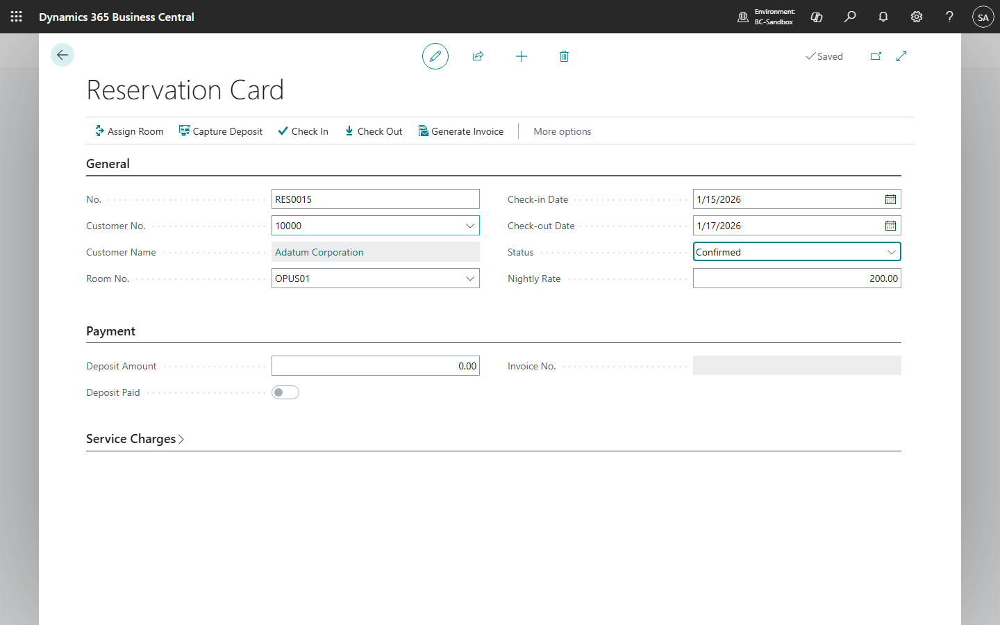

trigger OnInsert()
HotelSetup.Get();
HotelSetup.TestField("Reservation Nos.");
"No." := NoSeries.GetNextNo(HotelSetup."Reservation Nos.", WorkDate());HotelSetup.TestField("Invoice Nos.");
HotelSetup.TestField("Room Revenue G/L Account");
SalesHeader."No." := NoSeries.GetNextNo(HotelSetup."Invoice Nos.", WorkDate());Opus 4.7 · run 0Pass
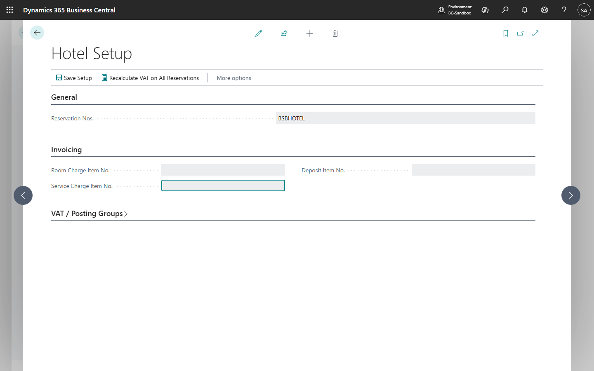
field(2; "Reservation Nos."; Code[20]) { TableRelation = "No. Series"; }"No. Series" := GetNoSeriesCode();
"Reservation No." := NoSeries.GetNextNo("No. Series");SalesHeader.Insert(true); // Assigns Document No. from Sales invoice no. seriesfield("Room Charge Item No."; Rec."Room Charge Item No.")... "Service Charge Item No."... "Deposit Item No."›F-02A Reservation table exists carrying the minimum reservation data and a status field.N/APassPass
Opus 4.7 · run 0Pass
field(1; "No."; Code[20])
field(10; "Customer No."; Code[20])
field(20; "Room No."; Code[20])
field(30; "Check-in Date"; Date)
field(40; Status; Enum "Hotel Reservation Status")
field(50; "Deposit Amount"; Decimal)
field(60; "Invoice No."; Code[20])Opus 4.7 · run 0Pass
field(1; "Reservation No."; Code[20])... field(2; "Customer No."...) field(4; "Room No."...) field(5; "Check-In Date"...) field(6; "Check-Out Date"...) field(7; "Status"; Enum "Hotel Reservation Status") field(8; "Deposit Amount"; Decimal) field(11; "Invoice No."; Code[20])›F-03A Room inventory table exists carrying the minimum room data and an occupancy flag.N/APassPass
Opus 4.7 · run 0Pass
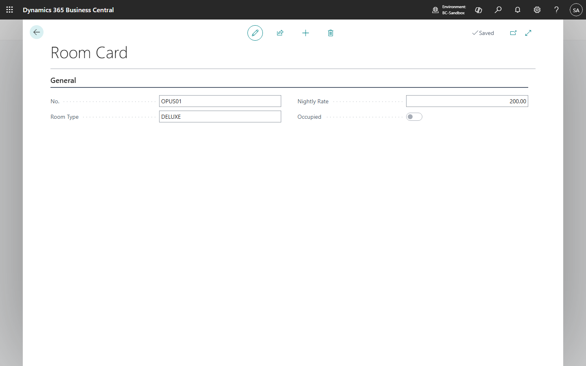
field(1; "No."; Code[20])
field(10; "Room Type"; Code[20])
field(20; "Nightly Rate"; Decimal)
field(30; Occupied; Boolean) { Editable = false; }Opus 4.7 · run 0Pass
field(1; "Room No."; Code[20])
field(2; "Room Type"; Enum "Room Type")
field(3; "Nightly Rate"; Decimal)
field(4; "Occupied"; Boolean)›F-04A reservation can be created with a room assigned and an initial Confirmed status.N/APassPass
Opus 4.7 · run 0Pass
trigger OnInsert()
"No." := NoSeries.GetNextNo(HotelSetup."Reservation Nos.", WorkDate());
Status := Status::Confirmed;Opus 4.7 · run 0Pass UI navigation failed
trigger OnNewRecord(BelowxRec: Boolean)
begin
Rec."Status" := "Hotel Reservation Status"::Confirmed;
end;trigger OnInsert ... "Reservation No." := NoSeries.GetNextNo("No. Series");›F-05Overbooking is prevented when a room is reserved for dates overlapping an existing active reservation.N/APassPass
Opus 4.7 · run 0Pass UI navigation failed
ExistingReservation.SetRange("Room No.", RoomNo);
ExistingReservation.SetFilter(Status, '<>%1', ExistingReservation.Status::Closed);
if (CheckInDate < ExistingReservation."Check-out Date") and (CheckOutDate > ExistingReservation."Check-in Date") then exit(false);if CheckRoomAvailability(...) then Reservation.Modify(true)
else Error('Room %1 is not available for the selected dates.', Reservation."Room No.");Opus 4.7 · run 0Pass UI navigation failed
ConflictingReservation.SetRange("Room No.", RoomNo);
ConflictingReservation.SetFilter(Status, '%1|%2', ...Confirmed, ...Occupied);
ConflictingReservation.SetFilter("Check-In Date", '<%1', RequestedCheckOut);
ConflictingReservation.SetFilter("Check-Out Date", '>%1', RequestedCheckIn);Error('Overbooking prevented: Room %1 is already reserved by another guest for a period that overlaps %2 to %3.\\...', ...);›F-06A deposit can be captured against a reservation and its captured/failed state is tracked.N/APassPass
Opus 4.7 · run 0Pass
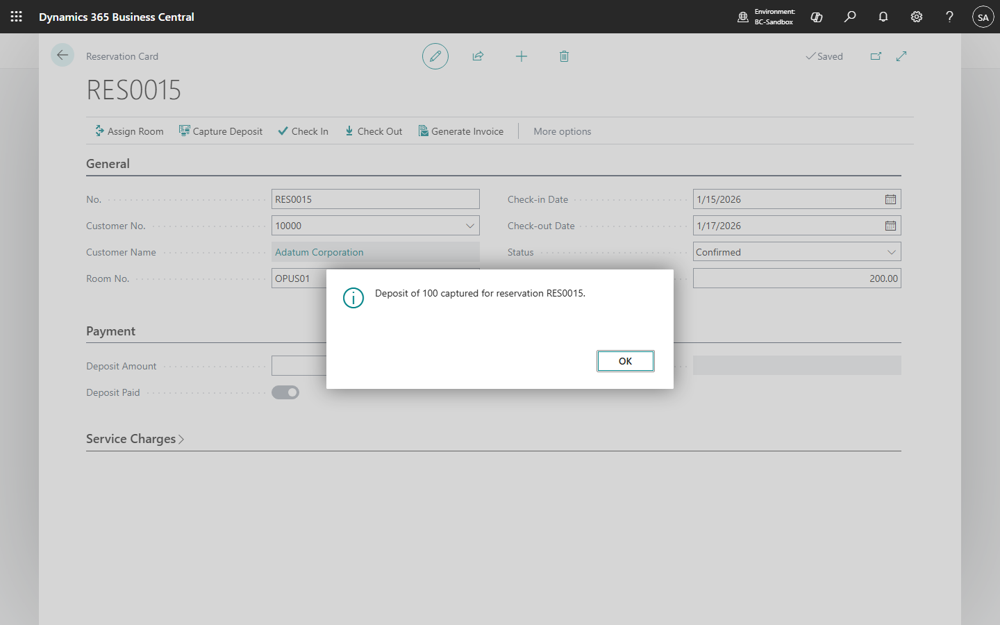
if Reservation."Deposit Paid" then Error('Deposit has already been captured...');
GenJnlLine.Amount := -Reservation."Deposit Amount";
Reservation."Deposit Paid" := true;Opus 4.7 · run 0Pass UI navigation failed
CaptureSucceeded := true; // Simulation
if CaptureSucceeded then begin
ReservationHeader.Validate("Deposit Captured", true);
ReservationHeader.Validate("Payment Status", "Hotel Payment Status"::Received);
ReservationHeader."Amount Paid" := ReservationHeader."Deposit Amount";field(19; "Deposit Captured"; Boolean)... field(17; "Payment Status"; Enum "Hotel Payment Status")›F-07Check-in transitions the reservation to Occupied and marks the assigned room occupied.N/APassPass
Opus 4.7 · run 0Pass
Room.Get(Reservation."Room No.");
Room.SetOccupied(true);
Reservation.Status := Reservation.Status::Occupied;Opus 4.7 · run 0Pass UI navigation failed
ReservationHeader.Validate(Status, "Hotel Reservation Status"::Occupied);
ReservationHeader.Modify(true);if NewRoomNo <> '' then if Room.Get(NewRoomNo) then begin Room.Occupied := IsRoomCurrentlyOccupied(...); Room.Modify(); end;HotelReservationMgt.UpdateRoomOccupancy(Rec, xRec);›F-08Service charge lines (e.g. breakfast, laundry, transfer) can be stored against a reservation.N/APassPass
Opus 4.7 · run 0Pass UI navigation failed
field(1; "Reservation No."; Code[20]) { TableRelation = Reservation; }
field(10; Description; Text[100])
field(20; Amount; Decimal) { MinValue = 0; }page 50105 "Service Charge Subpage" { SourceTable = "Service Charge"; AutoSplitKey = true; field(Description; ...); field(Amount; ...);part(ServiceCharges; "Service Charge Subpage") { SubPageLink = "Reservation No." = field("No."); }Opus 4.7 · run 0Pass UI navigation failed
field(1; "Reservation No."... TableRelation = "Reservation Header")... field(9; "Type"; Enum "Reservation Line Type")... field(10; "Service Type"; Enum "Hotel Service Type")... field(6; "Amount"; Decimal)page 50113 "Reservation Service Charges" with SubPageLink = "Reservation No."›F-09Checkout generates a single invoice, calculates VAT, posts the financial result, closes the reservation and releases the room.N/AFailFail
Opus 4.7 · run 0Fail
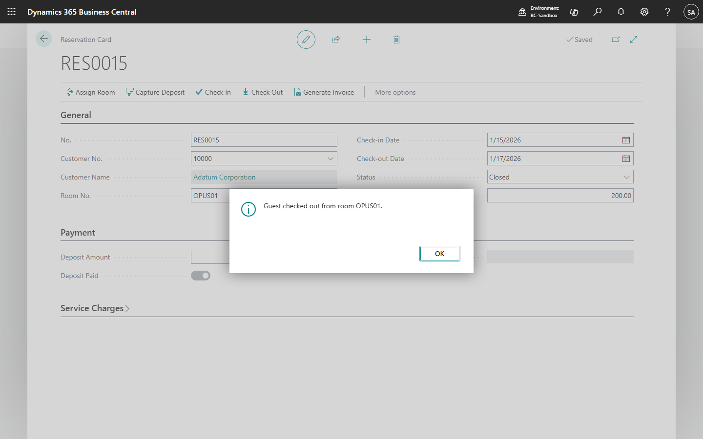
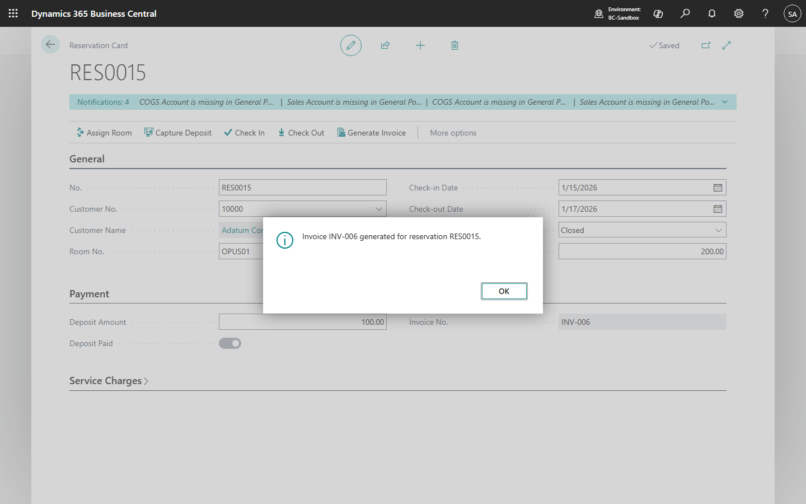
procedure CheckOut(var Reservation: Record Reservation)
Room.SetOccupied(false);
Reservation.Status := Reservation.Status::Closed;
// no invoice generation, no SalesPost.RunSalesHeader.Init(); SalesHeader."No." := NoSeries.GetNextNo(...); SalesHeader.Insert(true);
// no SalesPost.Run(SalesHeader)
Reservation."Invoice No." := SalesHeader."No.";Opus 4.7 · run 0Fail
procedure CheckOut(...) ... ReservationHeader.Validate(Status, "Hotel Reservation Status"::Closed); ReservationHeader.Modify(true); ... Message('Check-Out complete...')SalesHeader.Init();
SalesHeader.Validate("Document Type", SalesHeader."Document Type"::Invoice);
SalesHeader.Insert(true); // creates DRAFT — never followed by SalesPost.Run(no matches — codeunit "Sales-Post" / SalesPost.Run is never invoked in the submission)›F-10VAT is recalculated when tax configuration changes before the invoice is generated.N/APassPass
Opus 4.7 · run 0Pass UI navigation failed
SalesLine."VAT Bus. Posting Group" := HotelSetup."VAT Business Posting Group";
SalesLine."VAT Prod. Posting Group" := HotelSetup."VAT Product Posting Group";
SalesLine.Validate("Unit Price", RoomAmount);Opus 4.7 · run 0Pass UI navigation failed
trigger OnModify() ... VATSetupChanged := (Rec."VAT Prod. Posting Group" <> xRec...") or (Rec."Default Room VAT %" <> xRec...); ... UpdatedCount := HotelVATCalculation.BulkRecalcUnInvoicedReservations();ReservationHeader.SetRange("Invoice No.", '');
if ReservationHeader.FindSet(true) then repeat ... CalcReservationVAT(ReservationHeader); UpdatedCount += 1; until ...›F-11The deposit is applied against the final bill and the remaining amount due is settled.N/AFailFail
Opus 4.7 · run 0Fail
if Reservation."Deposit Paid" and (Reservation."Deposit Amount" > 0) then begin
SalesLine.Validate("No.", HotelSetup."Deposit G/L Account");
SalesLine.Validate("Unit Price", -Reservation."Deposit Amount");Opus 4.7 · run 0Fail
if DepositIsCaptured then begin
SalesLine.Validate("No.", DepositItemNo);
SalesLine.Validate(Quantity, 1);
SalesLine.Validate("Unit Price", -ReservationHeader."Deposit Amount");(no matches — final-payment settlement never goes through standard posting)›C-01All custom objects fall within a single declared object-ID range registered in app.json.N/APassPass
Opus 4.7 · run 0Pass
Object IDs: tables 50100-50103, pages 50100-50105, codeunits 50100-50102, enum 50100, ext 50100 — all within app.json idRange 50100-99999Opus 4.7 · run 0Pass
"idRanges": [{"from": 50100, "to": 99999}]All object IDs 50100..50113 — every ID falls inside the declared range 50100-99999›C-02User-facing page fields carry ToolTips.N/APassPass
Opus 4.7 · run 0Pass
Pag50100:7 Pag50101:4 Pag50102:4 Pag50103:9 Pag50104:16 Pag50105:3 PagExt50100:1 — every page field carries a non-empty ToolTip (44/44 fields)Opus 4.7 · run 0Pass
Per page: 50100:5, 50101:5, 50102:21, 50103:30, 50104:4, 50105:9, 50113:13 vs field counts 4,4,13,21,4,7,11 → every page-field carries a ToolTip; coverage well above 80%›C-03Table fields declare a DataClassification.N/APassPass
Opus 4.7 · run 0Pass
Tab50100:9 Tab50101:5 Tab50102:11 Tab50103:6 TabExt50100:1 — every custom table field declares DataClassification=CustomerContentOpus 4.7 · run 0Pass
50100:5 (4 fields, all with DC + table-level), 50101:20 (only 'Total Service Charges' FlowField lacks it), 50102:9 (all storage fields), 50103:16 (all), 50106/50107: storage field has DC; FlowField/FlowFilter don't require DC›C-04Numbering and posting reuse standard BC platform modules rather than bespoke implementations.N/AFailFail
Opus 4.7 · run 0Fail
0 matches — neither SalesPost.Run nor GenJnlPostLine.RunWithCheck is called anywhereif not GenJnlBatch.FindFirst() then Error('No general journal batch found.');
GenJnlLine.Insert(true); // line inserted, never postedOpus 4.7 · run 0Fail
"Reservation No." := NoSeries.GetNextNo("No. Series"); // standard No. Series module ✓SalesHeader.Init(); SalesHeader.Validate("Document Type", ...Invoice); SalesHeader.Insert(true); // creates DRAFT only(no matches — standard posting codeunits are never invoked)›C-05Key lifecycle transitions expose integration events for extensibility.N/AFailFail
Opus 4.7 · run 0Fail
0 matches across all 16 source filesOpus 4.7 · run 0Fail
0 matches across the entire submission›C-06Operational outcomes emit telemetry via the platform session log.N/AFailFail
Opus 4.7 · run 0Fail
0 matchesOpus 4.7 · run 0Fail
0 matches — no telemetry emission anywhere›S-01The solution models all required domain tables: reservation, room inventory, and service charges.N/APassPass
Opus 4.7 · run 0Pass
table 50101 "Room"
table 50102 "Reservation"
table 50103 "Service Charge"Opus 4.7 · run 0Pass
table 50100 "Room"table 50101 "Reservation Header"table 50103 "Reservation Service Charge"›S-02Reservation status is modelled as an enum with the required Confirmed, Occupied and Closed values.N/APassPass
Opus 4.7 · run 0Pass
enum 50100 "Hotel Reservation Status"
value(0; Confirmed)
value(1; Occupied)
value(2; Closed)field(40; Status; Enum "Hotel Reservation Status")Opus 4.7 · run 0Pass
enum 50101 "Hotel Reservation Status" { value(0; "Confirmed") value(1; "Occupied") value(2; "Closed") }field(7; "Status"; Enum "Hotel Reservation Status")›S-03Distinct permission sets reflect the Front Desk, Finance and Admin roles.N/AFailPass
Opus 4.7 · run 0Fail
no files — zero permissionset objects shippedOpus 4.7 · run 0Pass
permissionset 50100 "HOTEL-ADMIN" — full RIMD on Room+HotelSetup+Reservation+ServiceCharge + all codeunitspermissionset 50101 "HOTEL-FRONTDESK" — only R on Hotel Setup, NO Process Refund / Generate Invoice / VAT Calculation codeunitspermissionset 50102 "HOTEL-FINANCE" — RIMD on Hotel Setup, includes Process Refund + Generate Invoice + VAT Calculation codeunits; only R on Room›S-04Deposit and payment handling is modelled including application of the deposit to the final bill.N/APassPass
Opus 4.7 · run 0Pass
field(50; "Deposit Amount"; Decimal)
field(51; "Deposit Paid"; Boolean) { Editable = false; }if Reservation."Deposit Paid" and (Reservation."Deposit Amount" > 0) then begin
SalesLine.Validate("No.", HotelSetup."Deposit G/L Account");
SalesLine.Validate("Unit Price", -Reservation."Deposit Amount");Opus 4.7 · run 0Pass
CaptureSucceeded := true; if CaptureSucceeded then ReservationHeader.Validate("Deposit Captured", true); ... "Amount Paid" := "Deposit Amount";if DepositIsCaptured then begin ... SalesLine.Validate("Unit Price", -ReservationHeader."Deposit Amount"); ... // applied as credit on invoice›S-05All four named negative cases are explicitly handled: overbooking, failed payment, duplicate invoice and unauthorized refund.N/AFailPass
Opus 4.7 · run 0Fail
// overbooking guard existsif Reservation."Invoice No." <> '' then Error('Invoice has already been generated...');if not PermissionMgt.CanProcessRefund() then Error('You do not have permission to process refunds...');// CaptureDeposit unconditionally sets Deposit Paid := true — no failure pathOpus 4.7 · run 0Pass
Error('Overbooking prevented: Room %1 is already reserved...')if ReservationHeader."Payment Status" = "Hotel Payment Status"::Failed then Error('Check-In is blocked... Payment Status is Failed...');if ReservationHeader."Invoice No." <> '' then Error('Invoice generation is blocked for Reservation %1: invoice %2 has already been generated. Duplicate invoices are not permitted.', ...)procedure CheckRefundPermission() begin if not HasFinancePermission() then Error('Access denied... Processing refunds is restricted to HOTEL-FINANCE...')›S-06The submission stays within the spec's scope without adding unrelated modules.N/APassPass
Opus 4.7 · run 0Pass
All 16 objects map to reservation/room/service-charge/setup/billing/permission scope — no out-of-scope modulesOpus 4.7 · run 0Pass
Codeunit/Enum/Page/PermissionSet/Table/TableExt — all named after Room/Reservation/Hotel/Front Desk/Finance domain; Cue/Role Center pages are operational dashboards within scope›P-01Lifecycle actions validate the current reservation status before executing and block illegal transitions.N/APassPass
Opus 4.7 · run 0Pass UI navigation failed
if Reservation.Status <> Reservation.Status::Confirmed then Error('Only confirmed reservations can be checked in.');if Reservation.Status <> Reservation.Status::Occupied then Error('Only occupied reservations can be checked out.');if Reservation.Status <> Reservation.Status::Closed then Error('Reservation must be closed before generating an invoice.');Opus 4.7 · run 0Pass
if ReservationHeader.Status <> "Hotel Reservation Status"::Confirmed then Error('Check-In is only allowed for reservations with status Confirmed. Current status: %1.', ...);if ReservationHeader.Status <> "Hotel Reservation Status"::Occupied then Error('Check-Out is only allowed for reservations with status Occupied. Current status: %1.', ...);if ReservationHeader.Status <> "Hotel Reservation Status"::Closed then Error('An invoice can only be generated for a Closed reservation. Current status: %1.', ...);if (xRec."Status" = xRec."Status"::Closed) and ("Status" <> "Status"::Closed) then Error('You cannot re-open a Closed reservation.');›P-02Critical fields are validated (TestField or equivalent) before posting or state-change procedures run.N/APassPass
Opus 4.7 · run 0Pass
Reservation.TestField("Room No.");
Reservation.TestField("Customer No.");
if not Reservation."Deposit Paid" then Error('Deposit must be paid before check-in.');Reservation.TestField("Customer No.");
Reservation.TestField("Room No.");
Reservation.TestField("Check-in Date");
Reservation.TestField("Check-out Date");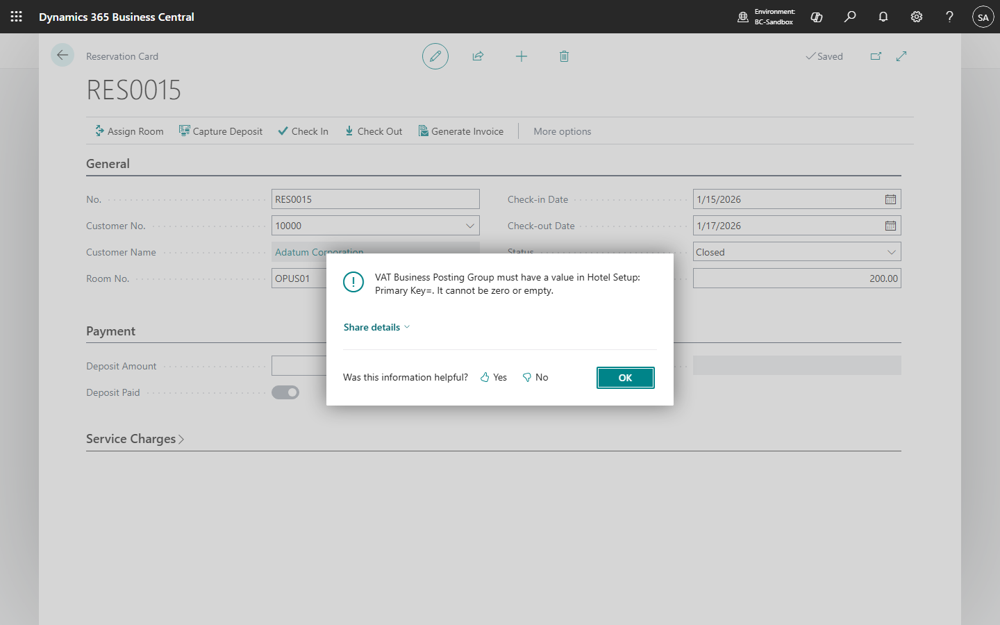
Opus 4.7 · run 0Pass
if ReservationHeader."Room No." = '' then Error('A Room must be assigned before checking in.'); if not Room.Get(ReservationHeader."Room No.") then Error('Room %1 does not exist.', ...)if ReservationHeader."Customer No." = '' then Error('A Customer No. must be assigned to the reservation before generating an invoice.');Customer No. NotBlank=true, Room No. NotBlank=true, Check-In Date NotBlank=true, Check-Out Date NotBlank=true; OnValidate enforces Check-In < Check-Out›P-03Money moves only through standard BC posting; no direct inserts into ledger tables and posted documents remain traceable.N/AFailFail
Opus 4.7 · run 0Fail
0 matches — no posting codeunit invokedSalesHeader.Insert(true); ... SalesLine.Insert(true); ... // no SalesPost.RunOpus 4.7 · run 0Fail
SalesHeader.Insert(true); — creates the open Sales Header but no SalesPost.Run is ever called(no matches — standard posting codeunits are never invoked)ReservationHeader."Amount Paid" := NewAmountPaid; ReservationHeader.Modify(true); // refund only mutates a custom field — no Cust. Ledger Entry, no posted Sales Credit Memo›P-04Every system-blocked action surfaces a user-readable error identifying what failed and why.N/APassPass
Opus 4.7 · run 0Pass
Error('Room %1 is not available for the selected dates.', Reservation."Room No.");Error('Invoice has already been generated for this reservation.');Error('You do not have permission to process refunds. Only Finance role can perform this action.');Opus 4.7 · run 0Pass
Error('Overbooking prevented: Room %1 is already reserved by another guest for a period that overlaps %2 to %3.\\...', ...);Error('Invoice generation is blocked for Reservation %1: invoice %2 has already been generated...', "Reservation No.", "Invoice No.");Error('Access denied.\\ Processing refunds is restricted to users with the HOTEL-FINANCE or HOTEL-ADMIN permission set.\\ Front Desk users are not authorised...')›P-05Real-world bad inputs are blocked: failed payment cannot report success, an invoice cannot be generated twice, and zero/negative amounts are rejected.N/AFailPass
Opus 4.7 · run 0Fail
if Reservation."Invoice No." <> '' then Error('Invoice has already been generated for this reservation.');// CaptureDeposit always sets Reservation."Deposit Paid" := true — there is no fail pathfield(20; Amount; Decimal) { MinValue = 0; } // ZERO is allowed; negative blockedOpus 4.7 · run 0Pass
if ReservationHeader."Invoice No." <> '' then Error('Invoice generation is blocked... Duplicate invoices are not permitted.', ...);case StrMenu... 2: begin Rec.Validate("Payment Status", "Hotel Payment Status"::Failed); Rec.Modify(true); Error('Payment capture has FAILED ... Check-In and Invoice Generation are blocked...')if ReservationHeader."Deposit Amount" <= 0 then Error('Post Deposit cannot proceed... no Deposit Amount has been set...');if RefundAmount <= 0 then Error('Refund amount must be greater than zero...')›P-06Refund processing is restricted to Finance and Front Desk is blocked from refund actions.N/APassPass
Opus 4.7 · run 0Pass UI navigation failed
procedure CanProcessRefund(): Boolean
if UserSetup.Get(UserId) then exit(UserSetup."Allow Refund Processing");
exit(false);if not PermissionMgt.CanProcessRefund() then Error('You do not have permission to process refunds. Only Finance role can perform this action.');tableextension 50100 "Hotel User Setup" extends "User Setup" { field(50100; "Allow Refund Processing"; Boolean) }Opus 4.7 · run 0Pass
// 'Process Refund' codeunit is intentionally excluded from this permission set... Front Desk has only R on Hotel Setupaction(ProcessRefund) { AccessByPermission = tabledata "Hotel Setup" = M; ... ToolTip = '...Restricted to HOTEL-FINANCE and HOTEL-ADMIN users only — hidden from Front Desk staff.'HotelPermissionMgt.CheckRefundPermission(); // hard Error for non-Finance/Admin even when called outside the UI›P-07The solution is organized into a conventional folder/file structure with one logical object per file.N/APassFail
Opus 4.7 · run 0Pass
Cod*.al ×3, Enum*.al ×1, Pag*.al ×6, PagExt*.al ×1, Tab*.al ×4, TabExt*.al ×1 — one object per file, kind-prefixed filename, all under src/Opus 4.7 · run 0Fail
Codeunit50100.HotelReservationMgt.al, Codeunit50101..., Enum50100..., Page50100..., PermissionSet50100..., Table50100... — one object per file, but ALL files live flat in Src/; no Tables/Pages/Codeunits/Enums sub-foldersRental / Real Estate Management
Real-estate rental: projects, properties, lease contracts, recurring billing, signatory locking, termination.
Click any criterion to expand — each agent’s council verdict, individual grader votes, reasoning, and evidence (screenshots, OData queries, code).
›F-01Document numbering and posting G/L accounts are drawn from configurable setup (No. Series and G/L account setup), not hardcoded in business logic.FailFailPass
Opus 4.7 · run 0Fail
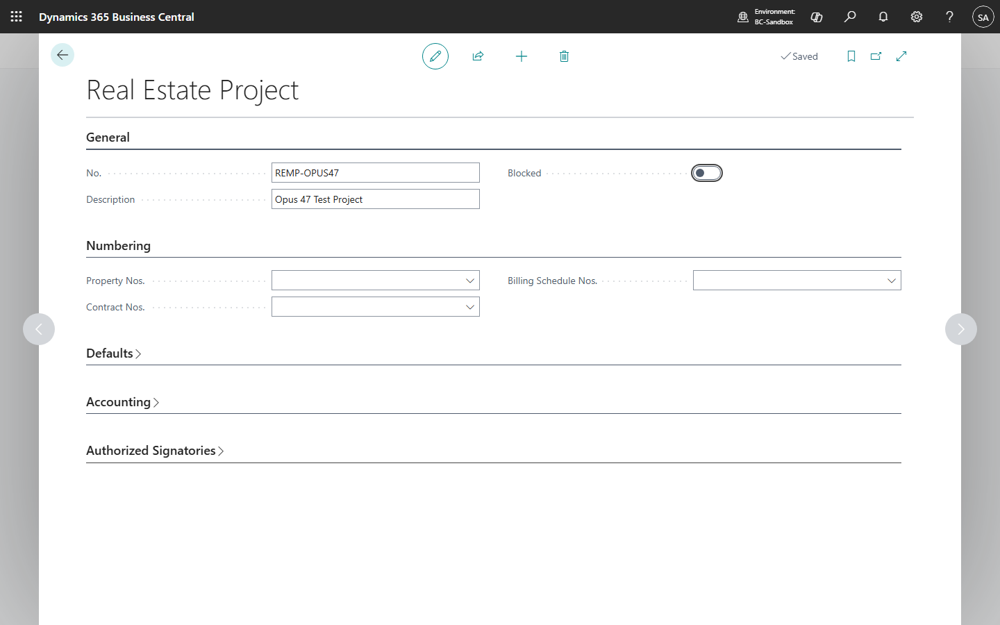
trigger OnInsert()
var Project: Record "REM Project";
begin
if ("Project No." <> '') and Project.Get("Project No.") then begin
if "Payment Terms Code" = '' then ... // no NoSeriesMgt.GetNextNo callNo matches foundOpus 4.7 · run 0Fail
field(10; "Property No. Series"; Code[20]) { TableRelation = "No. Series"; }
field(11; "Contract No. Series"; Code[20]) { TableRelation = "No. Series"; }table 50102 "Lease Contract" { ... no OnInsert trigger, no NoSeriesMgt.GetNextNo call anywhere ... }table 50101 "Property" { ... no OnInsert trigger ... }NoSeriesMgt: Codeunit "No. Series"; // declared but NEVER invoked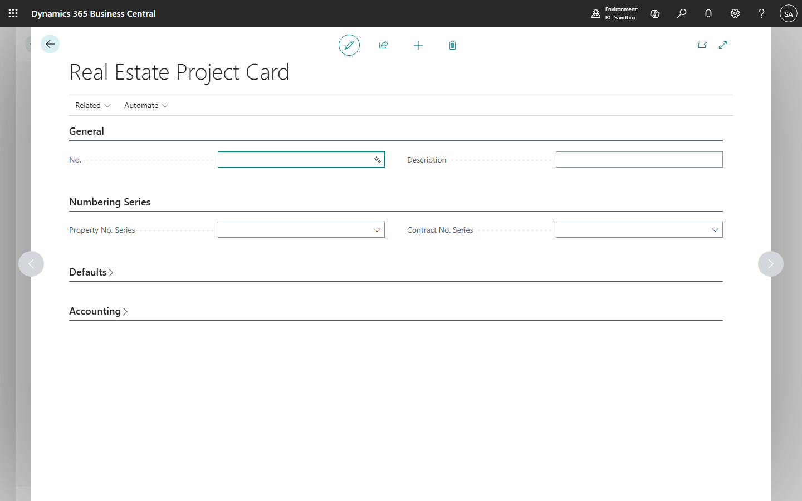
Card page has no OnNewRecord/OnInsertRecord wiring No.Series.Opus 4.7 · run 0Pass
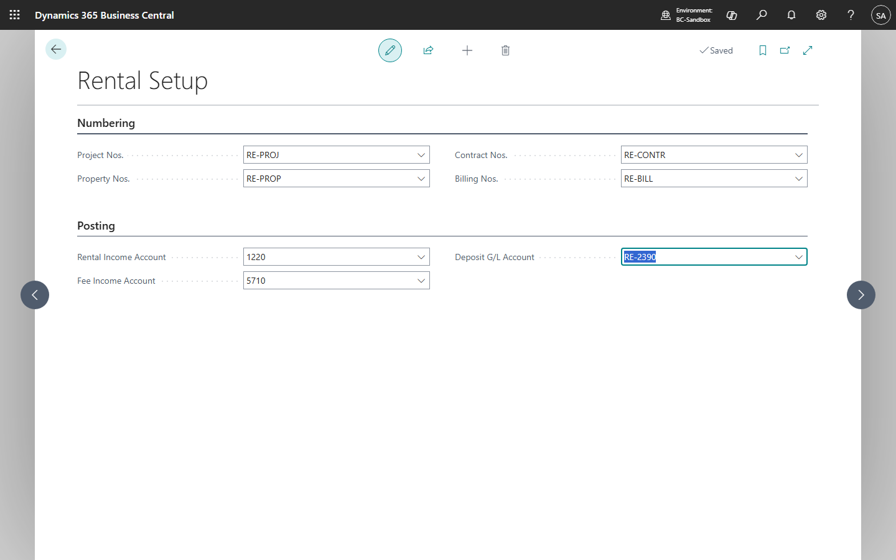
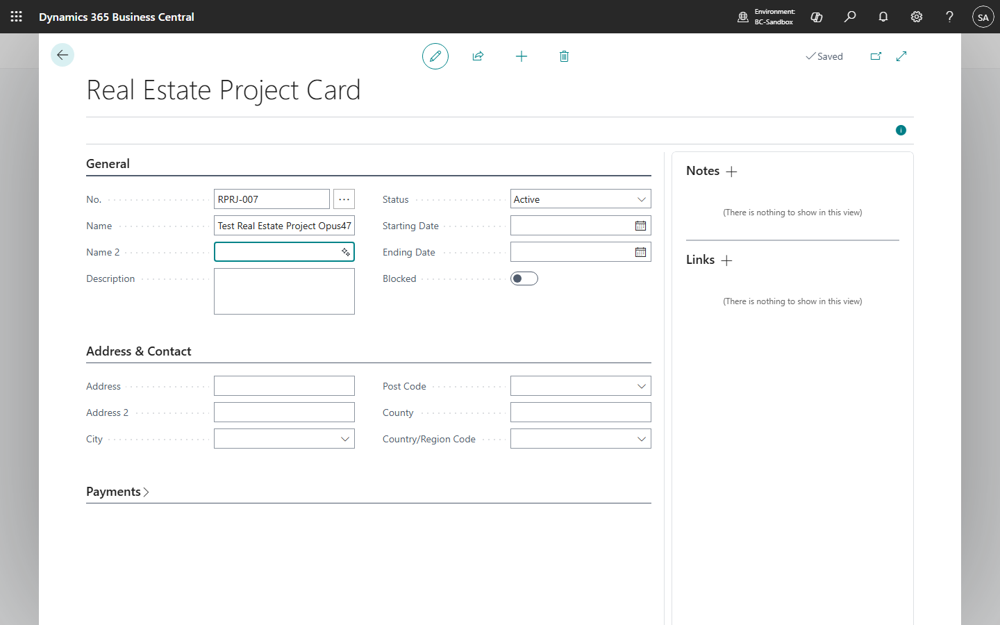
GetRentalSetup(RentalSetup);
RentalSetup.TestField("Project Nos.");
RealEstateProject."No. Series" := RentalSetup."Project Nos.";
RealEstateProject."No." := NoSeriesMgt.GetNextNo(RentalSetup."Project Nos.", WorkDate());RentalSetup.TestField("Rental Income Account");
...
SalesLine.Validate("No.", RentalSetup."Rental Income Account");›F-02A Real Estate Project setup record can be created with project-level configuration defaults.PassPassFail
Opus 4.7 · run 0Pass

table 50100 "REM Project" { ... field(3; "Property Nos."; Code[20]) { TableRelation = "No. Series"; } ... field(6; "Default Bank Account No."; ...); field(7; "Default Payment Terms Code"; ...); field(13; "Default Template Code"; TableRelation = "REM Contract Template"; }Opus 4.7 · run 0Pass


field(10; "Property No. Series")
field(11; "Contract No. Series")
field(20; "Default Bank Account")
field(21; "Default Payment Method")
field(22; "Default Payment Terms")
field(30; "Deposit G/L Account")
field(31; "Rental Income G/L Account")table 50106 "Contract Template" — separate template list associable via LeaseContract."Contract Template Code"Opus 4.7 · run 0Fail
field(20; "Bank Account Code"; Code[20]) { TableRelation = "Bank Account"; }
field(21; "Payment Method Code"; Code[10]) { ... }
field(22; "Payment Terms Code"; Code[10]) { ... }
// no Signatory or Contract Template association fields›F-03A Property (rentable unit) card can be created with the minimum required property data.PassPassFail
Opus 4.7 · run 0Pass

table 50103 "REM Property" { ... field(1; "No."); field(2; "Project No."); field(3; "Property Type"); field(4; "Rental Status"); field(5-10; address); field(11-13; area); field(14-17; technical/legal); field(20-22; energy certification); }Opus 4.7 · run 0Pass

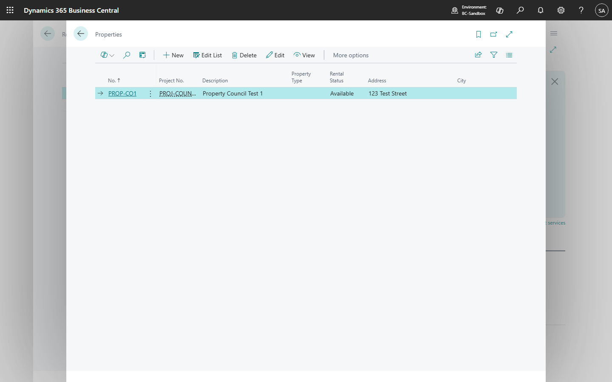
field(1; "No.")
field(2; "Project No.")
field(10; "Property Type")
field(11; "Rental Status")
field(20; "Address")
field(30; "Area (sqm)")
field(40; "Registry Reference")
field(60; "Energy Efficiency Rating")Opus 4.7 · run 0Fail

field(3; "Property Type"; Enum "Property Type")
field(4; "Rental Status"; Enum "Rental Status")
field(20; "Floor Area (sqm)"; Decimal)
field(21; "Floor No."; Integer)
field(22; "Unit No."; Code[20])
// no registry/legal data or energy-certification fields›F-04A lease contract can be created linking one or more properties and one or more tenants with its minimum contract data.PassPassPass
Opus 4.7 · run 0Pass
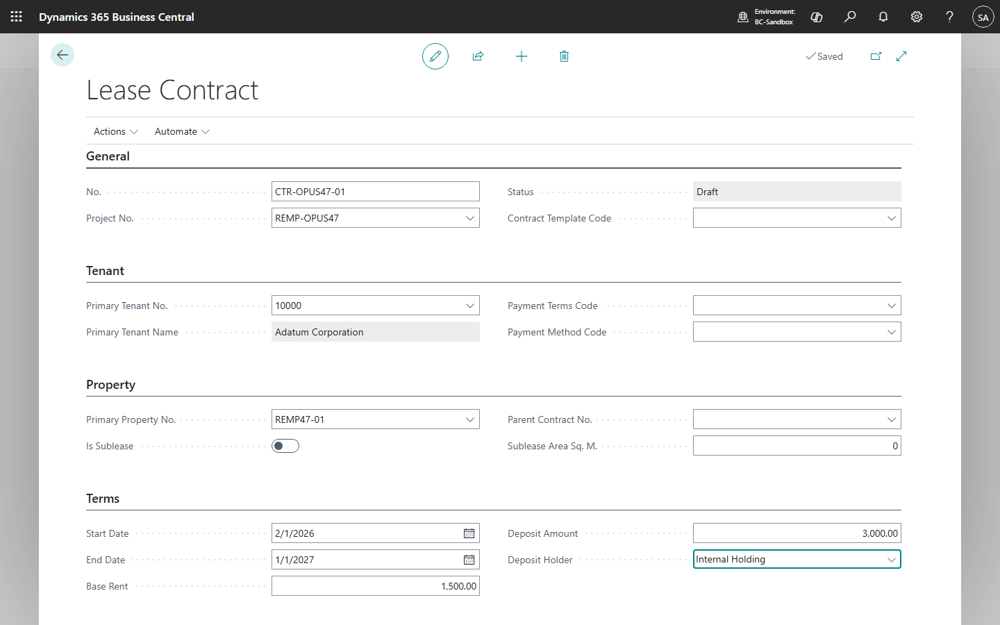
table 50104 "REM Contract" { field(1; "No."); field(2; "Project No."); field(3; "Primary Tenant No."); field(5; "Primary Property No."); field(6-7; Start/End Date); field(8; Status); field(9; "Base Rent"); field(10; "Deposit Amount"); field(14; "Contract Template Code"); ...Opus 4.7 · run 0Pass

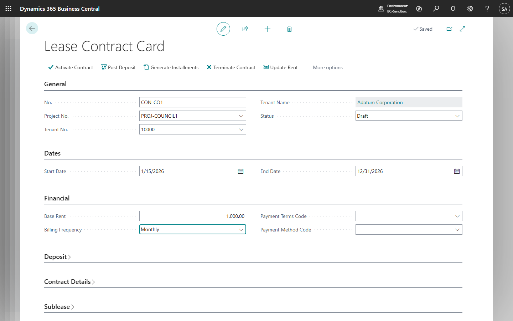
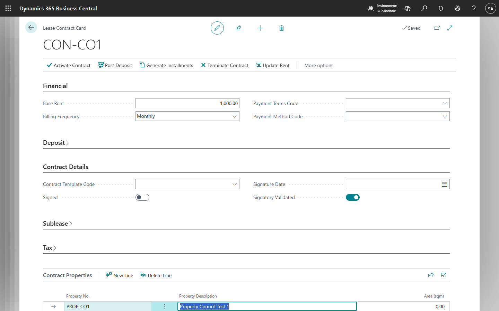
field(1;"No.")
field(2;"Project No.")
field(3;"Tenant No.")
field(10;"Start Date")
field(11;"End Date")
field(12;Status)
field(20;"Base Rent")
field(30;"Deposit Amount")
field(50;"Contract Template Code")table 50103 "Contract Property" — many-to-one link contract↔propertyOpus 4.7 · run 0Pass


field(2; "Tenant No."; Code[20]) TableRelation = Customer;
field(4; "Project No."; Code[20])
field(6; "Starting Date"; Date)
field(7; "Ending Date"; Date)
field(10; Status; Enum "Lease Contract Status")
field(51; "Deposit Amount"; Decimal)›F-05A contract transitions from Draft/Pending to Active only after signatory validation, and the linked property reflects the active lease.PassPassFail
Opus 4.7 · run 0Pass prerequisite not set up

ValidateLegalReadiness: TestField Project No./Tenant/Property/Dates/Base Rent/Contract Template Code; Template.Get; if Template."Legal Review Required" and not Contract."Legal Review Complete" then Error; ProjectSignatory IsEmpty -> Error; if not Contract."Required Signatories Approved" then Error; ActivateContract: Status := Active; Property."Rental Status" := Leased; Property.Modify.Opus 4.7 · run 0Pass
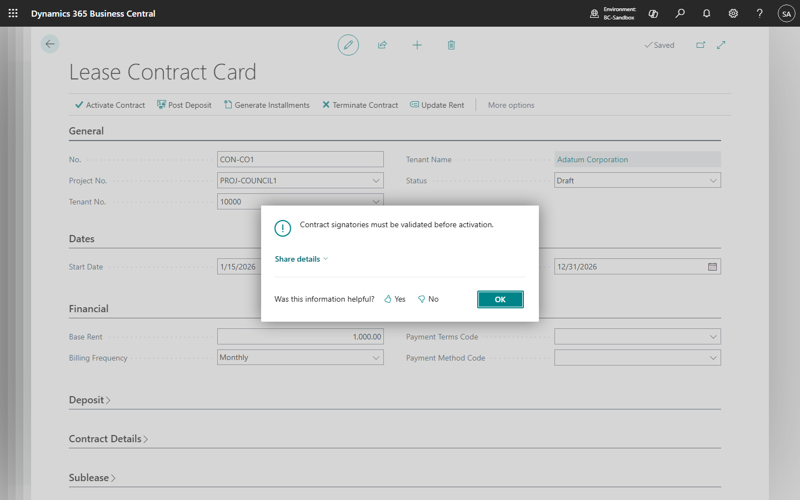
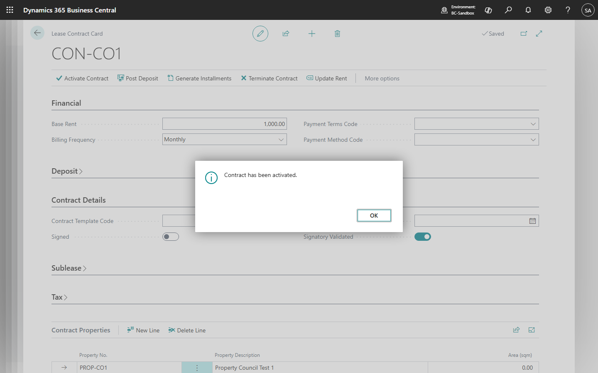

if not LeaseContract."Signatory Validated" then Error(SignatoryNotValidatedErr);
...
LeaseContract.Status := LeaseContract.Status::Active;
LeaseContract.Modify();
... Property."Rental Status" := Property."Rental Status"::Rented; Property.Modify();Opus 4.7 · run 0Fail

if RentalContract."Tenant No." = '' then Error(NoTenantErr, ...);
if (RentalContract."Starting Date" = 0D) ...
RentalContractLine.SetRange("Contract No.", ...);
if RentalContractLine.IsEmpty() then Error(NoPropertiesErr, ...);
// NO signatory validation anywhere
RentalContract.Status := RentalContract.Status::Active;›F-06A security deposit can be captured on the contract and posted with the correct internal/external holding distinction.FailFailPass
Opus 4.7 · run 0Fail
PostInitialDeposit -> CreateDepositEntry; CreateDepositEntry: DepositEntry.Init/Insert(true) into REM Deposit Entry table; AuditMgt.LogEvent(...). No GenJnlPostLine/Gen.JournalLine, no Sales-Post, no Customer/G/L ledger writes.No matches foundOpus 4.7 · run 0Fail
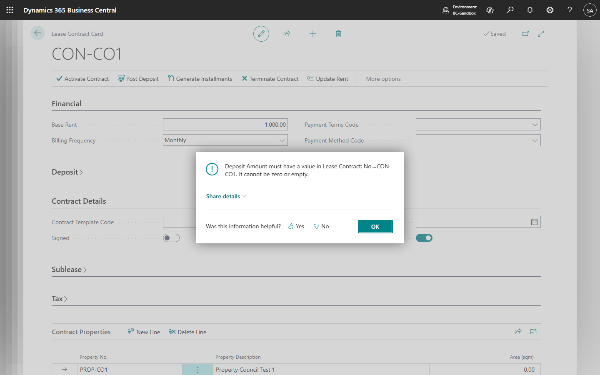
GenJnlLine.Init();
GenJnlLine."Journal Template Name" := 'GENERAL';
...
GenJnlLine."Bal. Account No." := RealEstateProject."Deposit G/L Account";
GenJnlLine.Description := StrSubstNo(DepositDescTxt, LeaseContract."No.");
LeaseContract."Deposit Posted" := true;
LeaseContract.Modify();// PostDeposit ends here — NO GenJnlLine.Insert, NO GenJnlPostLine.RunWithCheck(GenJnlLine); the journal line is never persisted, no posting ever occurs.Opus 4.7 · run 0Pass result not observable
GenJnlLine."Account Type" := GenJnlLine."Account Type"::"G/L Account";
GenJnlLine."Account No." := DepositAccountCode;
GenJnlLine."Bal. Account Type" := GenJnlLine."Bal. Account Type"::Customer;
GenJnlLine."Bal. Account No." := RentalContract."Tenant No.";
GenJnlPostLine.RunWithCheck(GenJnlLine);
DepositLedgerEntry."Deposit Type" := RentalContract."Deposit Type";
DepositLedgerEntry.Insert(true);field(52; "Deposit Type"; Enum "Deposit Type")
field(53; "Deposit G/L Account"; Code[20])
field(54; "Deposit Posted"; Boolean) Editable = false;›F-07A recurring billing schedule of installments/quotas can be generated for an active contract.PassPassFail
Opus 4.7 · run 0Pass result not observable
GenerateMonthlyRentSchedule: while PeriodStart <= ToDate do begin Schedule."Contract No." := ...; Schedule."Period Start/End" := ...; Schedule."Concept Code" := 'RENT'; Schedule.Amount := Contract."Base Rent"; Schedule.Insert(true); LineNo += 10000; PeriodStart := CalcDate('<1M>', PeriodStart); end;action(GenerateRent) { trigger OnAction() begin BillingMgt.GenerateMonthlyRentSchedule(Rec, Rec."Start Date", Rec."End Date", false); end; }Opus 4.7 · run 0Pass
while CurrentDate <= EndDate do begin
RentalInstallment.Init();
RentalInstallment."Contract No." := LeaseContract."No.";
... case BillingFrequency ... CalcDate('<+1M-1D>'...) ...
RentalInstallment."Base Rent Amount" := LeaseContract."Base Rent";
... IBI + AdditionalAmount + Total ...
RentalInstallment.Insert();action(GenerateInstallments) { trigger OnAction() ... RentalMgt.GenerateInstallments(Rec); Message(InstallmentsGeneratedMsg); }Opus 4.7 · run 0Fail
PeriodStart := CalcDate('<-CM>', BillingDate);
PeriodEnd := CalcDate('<CM>', BillingDate);
// processes a single month only
BillingPeriodBuffer.DeleteAll();
PopulateBillingBuffer(...);TableType = Temporary;›F-08Recurring billing supports simulate vs. create and posts invoices to standard BC documents and ledgers.FailFailFail
Opus 4.7 · run 0Fail
CreateSalesInvoices: SalesHeader.Validate("Document Type", Invoice); SalesHeader.Validate("Sell-to Customer No.", ...); SalesHeader.Insert(true); SalesLine.Insert(true); Schedule.Status := Invoiced; Schedule."Sales Invoice No." := SalesHeader."No."; Schedule.Modify(true); // NO SalesPost.Run(SalesHeader)No matches foundOpus 4.7 · run 0Fail
SalesHeader.Init();
SalesHeader."Document Type" := SalesHeader."Document Type"::Invoice;
SalesHeader.Insert(true);
SalesHeader.Validate("Sell-to Customer No.", LeaseContract."Tenant No.");
... SalesLine.Insert(true); ...
RentalInstallment.Invoiced := true;
RentalInstallment."Invoice No." := SalesHeader."No.";// CreateInvoiceFromInstallment ends here. NO SalesPost.Run(SalesHeader) anywhere in the codeunit. The Sales Header/Lines remain as a DRAFT invoice; never posted to Customer Ledger / G/L.No matches foundOpus 4.7 · run 0Fail

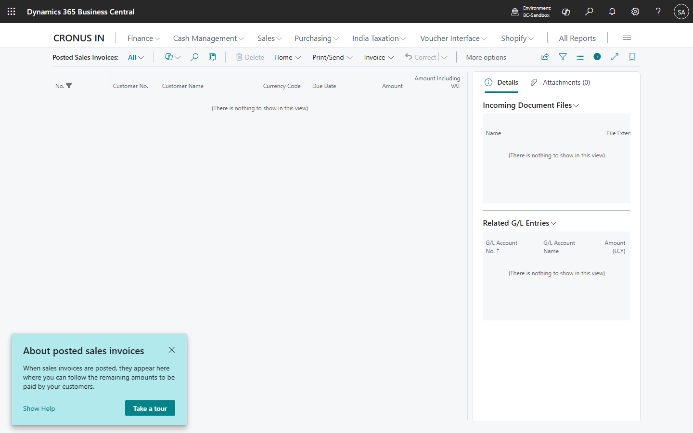
SalesHeader.Init();
SalesHeader."Document Type" := SalesHeader."Document Type"::Invoice;
SalesHeader.Insert(true);
SalesHeader.Validate("Sell-to Customer No.", RentalContract."Tenant No.");
...
SalesLine.Insert(true); SalesLine.Validate(...);
// NO SalesPost.Run(SalesHeader) anywhereSalesHeader.Insert(true);
SalesLine.Insert(true);
SalesLine.Validate(...);
Message('Invoice %1 has been created for Tenant %2.', SalesHeader."No.", RentalContract."Tenant No.");
// no posting call›F-09Property tax / IBI can be recharged to the tenant and recalculated after a tax update without double billing.PassPassFail
Opus 4.7 · run 0Pass result not observable
GenerateIBIRecharge: ... Schedule.SetRange("Concept Code", 'IBI'); Schedule.SetRange("IBI Year", IBIYear); Schedule.SetFilter(Status, '%1|%2', Open, Invoiced); if not Schedule.IsEmpty() then Error('IBI recharge for year %1 is already open or invoiced ...'); Schedule."Period Start" := DMY2Date(1,1,IBIYear); ...key(DuplicateGuard; "Contract No.", "Concept Code", "Period Start", "Period End"); trigger OnInsert begin PreventDuplicateBilling(); end; ... Error('Billing already exists for contract %1, concept %2, and period %3..%4 ...')Opus 4.7 · run 0Pass UI navigation failed
Property."Annual IBI Tax" := NewAnnualIBI;
Property.Modify();
... RentalInstallment.SetRange(Invoiced, false);
RentalInstallment.SetFilter("Due Date", '>=%1', WorkDate());
... RentalInstallment."IBI Amount" := CalculateIBIForInstallment(LeaseContract); ...Opus 4.7 · run 0Fail
no matches found across all AL sourcevalue(0; "Base Rent") { }
value(1; Fee) { }
// no Tax/IBI value›F-10A rent update / renewal can extend the contract and update its rent and schedule.PassPassFail
Opus 4.7 · run 0Pass result not observable
RenewContract: NewContract.TransferFields(Contract, false); NewContract."No." := NewContractNo; NewContract."Renewal Of Contract No." := Contract."No."; NewContract."End Date" := NewEndDate; NewContract."Base Rent" := NewRent; NewContract.Insert(true). ApplyRentUpdate: writes REM Rent History row (Old/New rent, Effective Date, Indexation%) and Contract.Modify.Opus 4.7 · run 0Pass UI navigation failed
RentUpdateHistory.Init(); RentUpdateHistory."Contract No." := LeaseContract."No."; RentUpdateHistory."Previous Rent" := OldRent; RentUpdateHistory."New Rent" := NewRent; ... RentUpdateHistory.Insert();
LeaseContract."Base Rent" := NewRent; LeaseContract.Modify();
... ExtendContract: if NewEndDate <= LeaseContract."End Date" then Error(ExtensionDateErr); LeaseContract."End Date" := NewEndDate; LeaseContract.Modify(); RentalMgt.GenerateInstallments(LeaseContract);action(UpdateRent) { ... RentUpdate.UpdateRent(Rec, NewRent, EffectiveDate, 'Manual Update'); Message(RentUpdatedMsg); }Opus 4.7 · run 0Fail
no matchesactions { Activate, StartCancellation, CloseContract, CreateInvoice, PostDeposit, DepositEntries, RunBilling, InvoiceLinks }
// no Renew / RentUpdate / Extend action›F-11A sublease contract can be created against a primary contract within the allowed scope.PassPassFail
Opus 4.7 · run 0Pass result not observable
ValidateSublease: if not Contract."Is Sublease" then exit; Contract.TestField("Parent Contract No."); if ParentContract."Is Sublease" then Error('Sub-subleasing is not allowed.'); ... TotalSubleasedArea += ChildContract."Sublease Area Sq. M."; if TotalSubleasedArea > GetContractArea(ParentContract) then Error('Sublease area %1 exceeds parent contract available area %2.', ...);Opus 4.7 · run 0Pass UI navigation failed
field(60; "Allow Sublease"; Boolean)
field(61; "Max Sublease Area"; Decimal)
field(62; "Parent Contract No."; Code[20]) { TableRelation = "Lease Contract" ... trigger OnValidate: if ParentContract."Parent Contract No." <> '' then Error(SubsubleaseNotAllowedErr); if not ParentContract."Allow Sublease" then Error(SubleaseNotAllowedErr); }Area OnValidate: if LeaseContract."Parent Contract No." <> '' then ParentContractProperty.SetRange(...); if "Area (sqm)" > ParentContractProperty."Area (sqm)" then Error(SubleaseAreaExceedsErr);Opus 4.7 · run 0Fail
no matches›F-12A contract can be terminated, releasing the property and triggering final billing.PassFailFail
Opus 4.7 · run 0Pass result not observable
StartCancellation: if not (Status in [Active, PendingSignature]) then Error; Contract.Status := Cancellation; CloseContract: if not (Status in [Active, Cancellation]) then Error; if Deposit Amount <> 0 then check Settlement entry exists else Error; Contract.Status := Closed; Property."Rental Status" := Available; Property.Modify.Opus 4.7 · run 0Fail
procedure TerminateContract(...)
LeaseContract.Status := LeaseContract.Status::"In Cancellation";
LeaseContract."End Date" := TerminationDate;
LeaseContract.Modify();
... Property."Rental Status" := Property."Rental Status"::Available; Property.Modify();
end; // NO final billing producedaction(Terminate) { ... RentalMgt.TerminateContract(Rec, TerminationDate); Message(ContractTerminatedMsg); }Opus 4.7 · run 0Fail
RentalContract.Status := RentalContract.Status::Closed;
RentalContract.Modify(true);
UpdateLinesStatus(RentalContract);
// release properties when no other active contracts
Property."Rental Status" := Property."Rental Status"::Available;
// NO final billing generated›F-13The security deposit is settled/refunded correctly at contract termination.FailFailFail
Opus 4.7 · run 0Fail
SettleDeposit: if SettlementAmount + RefundAmount <> Contract."Deposit Amount" then Error; if SettlementAmount <> 0 then CreateDepositEntry(...Settlement, -SettlementAmount,...); if RefundAmount <> 0 then CreateDepositEntry(...Refund, -RefundAmount,...); CreateDepositEntry inserts into custom REM Deposit Entry (no Gen.JournalLine, no GenJnlPostLine).No matches foundOpus 4.7 · run 0Fail
No matches// only PostDeposit exists — no settlement/refund procedure anywhere// no Settle/Refund Deposit action on the cardOpus 4.7 · run 0Fail
no matchesaction(PostDeposit) { ... }
action(DepositEntries) { ... }
// no Settle / Refund / Release Deposit action›C-01All custom objects use the registered Object-ID range declared in app.json and consistent affixes.PassFailPass
Opus 4.7 · run 0Pass
"idRanges": [ { "from": 50100, "to": 99999 } ]REMEnums.al: enums 50100-50107; REMTables.al: tables 50100-50111; REMPages.al: pages 50100-50113; REMManagement.Codeunits.al: codeunits 50100-50103 — all within 50100-99999; all objects prefixed 'REM 'Opus 4.7 · run 0Fail
"idRanges": [{ "from": 50100, "to": 99999 }]All custom object IDs observed: tables 50100-50108, pages 50100-50115, codeunits 50100-50102, enums 50102-50106 — all within 50100-99999.table 50102 "Lease Contract"
table 50101 "Property"
table 50100 "Real Estate Project" // NO registered prefix/suffix affix on object namesOpus 4.7 · run 0Pass
"idRanges":[{"from":50100,"to":99999}] — all custom objects 50100..50108 fit insideTab50100..Tab50108, Pag50100..Pag50110, Cod50100..Cod50101, Enum50100..Enum50107, Rep50100 — all within range, consistent prefix›C-02User-facing page fields and actions carry meaningful ToolTips.FailFailPass
Opus 4.7 · run 0Fail
0 (143 page fields, 0 ToolTip declarations)Opus 4.7 · run 0Fail
0 ToolTip occurrences across 14 page files containing 123 field definitions (ratio 0.00 vs required >= 0.80)Opus 4.7 · run 0Pass
Every page field/action inspected (Setup, Project, Property, Contract Card) carries a ToolTip property; coverage ≈ 100%field("No."; Rec."No.") { ... ToolTip = 'Specifies the number of the rental contract.'; }
field("Tenant No."; Rec."Tenant No.") { ... ToolTip = 'Specifies the customer (tenant) linked to this rental contract.'; }›C-03Custom table fields declare an appropriate DataClassification.PassPassPass
Opus 4.7 · run 0Pass
table 50100 "REM Project" { ... DataClassification = CustomerContent; } / table 50103 "REM Property" { ... DataClassification = CustomerContent; } / table 50104 "REM Contract" { ... DataClassification = CustomerContent; } — every table declares CustomerContent at table level (inherited by all fields).Opus 4.7 · run 0Pass
Every custom table field carries an explicit DataClassification = CustomerContent — ratio 100% (above the 90% bar). Personal/customer fields like "Tenant No."/"Tenant Name" are CustomerContent, NOT ToBeClassified.Opus 4.7 · run 0Pass
Every field across Tab50100–Tab50108 declares DataClassification (CustomerContent / SystemMetadata / EndUserIdentifiableInformation for User ID)field(11; "User ID"; Code[50]) { DataClassification = EndUserIdentifiableInformation; }›C-04Financial postings reuse standard BC posting modules rather than custom ledger code.FailFailFail
Opus 4.7 · run 0Fail
SalesHeader.Insert(true); SalesLine.Insert(true); // ... no Codeunit "Sales-Post".Run(SalesHeader)DepositEntry.Init(); DepositEntry.Posted := true; DepositEntry.Insert(true); // direct insert to custom 'ledger-like' tableNo matches foundOpus 4.7 · run 0Fail
0 matches across the entire codebaseSalesHeader.Init(); SalesHeader.Insert(true); ... SalesLine.Init(); ... SalesLine.Insert(true); // never SalesPost.RunGenJnlLine.Init(); ... GenJnlLine.Description := ...; LeaseContract."Deposit Posted" := true; LeaseContract.Modify(); // never Insert or GenJnlPostLine.RunWithCheckOpus 4.7 · run 0Fail
SalesHeader.Insert(true); SalesLine.Insert(true);
// no SalesPost.Run call — invoices never postedDepositLedgerEntry.Init();
DepositLedgerEntry."Contract No." := RentalContract."No.";
...
DepositLedgerEntry.Insert(true); // custom ledger table written directly›C-05The extension exposes integration events around key lifecycle and posting operations.FailFailFail
Opus 4.7 · run 0Fail
No matches foundOpus 4.7 · run 0Fail
0 matches — no integration events published around activation, billing, termination, or deposit settlement.Opus 4.7 · run 0Fail
no matches›C-06Operationally significant events emit telemetry.FailFailFail
Opus 4.7 · run 0Fail
No matches foundOpus 4.7 · run 0Fail
0 matches — no telemetry emitted for billing or lifecycle transitions.Opus 4.7 · run 0Fail
no matches›C-07Critical contract and tariff changes are captured for audit via change log or dedicated history.PassPassFail
Opus 4.7 · run 0Pass
table 50111 "REM Audit Entry" { fields: Entry No. (AutoIncrement), Event Date-Time, User ID, Event Type, Source Table ID, Source No., Description, Old Value, New Value; keys PK + Source }REM Audit Mgt..LogEvent records EventType + sourceTableId + sourceNo + description + Old/New value + UserId + CurrentDateTime; called from ActivateContract (StatusChange), StartCancellation, CloseContract, RenewContract, ApplyRentUpdate (ContractChange), CreateDepositEntry (Deposit).Opus 4.7 · run 0Pass
table 50108 "Rent Update History" — captures Previous Rent, New Rent, Update %, Update Type, User ID, Update Date for each rent changeRentUpdateHistory.Init(); ...RentUpdateHistory."User ID" := CopyStr(UserId, 1, 50); RentUpdateHistory.Insert();0 — no change-log enablement / no audit-history table for contract critical changes beyond rent. The 'Signed' boolean blocks edits to a few fields via OnValidate but does not record who changed what.Opus 4.7 · run 0Fail
no matches (no enablement and no dedicated history tables for rent/tariff/contract changes)›S-01The required core tables of the rental domain are present with their key fields.PassPassPass
Opus 4.7 · run 0Pass
tables 50100 REM Project / 50101 Contract Template / 50102 Project Signatory / 50103 REM Property / 50104 REM Contract / 50105 Contract Property / 50106 Contract Tenant / 50107 Billing Concept / 50108 Billing Schedule / 50109 Deposit Entry / 50110 Rent History / 50111 Audit Entry — all required spec entities presentOpus 4.7 · run 0Pass
tables 50100 Real Estate Project / 50101 Property / 50102 Lease Contract / 50103 Contract Property — all present with minimum spec fields (Project No., Property No., Contract No., Tenant link, Start/End Date, Base Rent, Deposit Amount, Deposit Held By, etc.)field(30; "Deposit Amount")
field(31; "Deposit Held By"; Enum "Deposit Holder")
field(32; "Deposit Posted")Opus 4.7 · run 0Pass
table 50101 "Real Estate Project" — No., Name, Address, Bank, Paymenttable 50102 "Property" — No., Project No., Type, Status, Area, Renttable 50103 "Rental Contract" — Contract No., Tenant No., Project No., Dates, Status, Deposit fieldstable 50105 "Deposit Ledger Entry" — Contract No., Tenant No., Amount, Deposit Type, G/L Account›S-02Role-based capabilities are reflected via permission sets aligned to the four spec roles.FailFailFail
Opus 4.7 · run 0Fail
No matches found — no permissionset objects, no permissions XMLOpus 4.7 · run 0Fail
No matches; no *.PermissionSet.al files exist.Opus 4.7 · run 0Fail
no matchesdirectory does not exist›S-03The contract status enum covers the required lifecycle states.PassPassPass
Opus 4.7 · run 0Pass
enum 50102 "REM Contract Status" { value(0; Draft); value(1; PendingSignature); value(2; Active); value(3; Cancellation) { Caption='In Cancellation Process'; } value(4; Closed) { Caption='Historical / Closed'; } }Opus 4.7 · run 0Pass
enum 50102 "Contract Status" { value(0;"Draft") value(1;"Active") value(2;"In Cancellation") value(3;"Closed") }Opus 4.7 · run 0Pass
value(0; Draft)
value(1; Active)
value(2; "In Cancellation")
value(3; Closed)›S-04Sublease scope rules are modelled (area tracking and nesting limits).PassPassFail
Opus 4.7 · run 0Pass
field(18; "Parent Contract No."; Code[20]) { TableRelation = "REM Contract"; } field(19; "Is Sublease"; Boolean); field(20; "Sublease Area Sq. M."; Decimal);ValidateSublease checks ParentContract."Is Sublease" => Error('Sub-subleasing is not allowed.'); sums sibling sublease areas vs parent contract area => Error if exceeded.Opus 4.7 · run 0Pass
field(60;"Allow Sublease") field(61;"Max Sublease Area") field(62;"Parent Contract No.") { OnValidate: if ParentContract."Parent Contract No." <> '' then Error(SubsubleaseNotAllowedErr); }Area OnValidate: if Sublease and Area > parent area then Error(SubleaseAreaExceedsErr)Opus 4.7 · run 0Fail
no matches›S-05Deposit handling distinguishes internal holding from external agency holding.PassFailPass
Opus 4.7 · run 0Pass
enum 50103 "REM Deposit Holder" { value(0; Internal) { Caption='Internal Holding'; } value(1; ExternalAgency) { Caption='External Agency'; } }TransferToExternalAgency: if "Deposit Holder" <> ExternalAgency then Error; CreateDepositEntry(...ExternalTransfer, -Amount, 'Transfer deposit to external agency');Opus 4.7 · run 0Fail
enum 50104 "Deposit Holder" { value(0;"Internal") value(1;"External Agency") }field(31; "Deposit Held By"; Enum "Deposit Holder")0 matches for a transfer action/procedureOpus 4.7 · run 0Pass
value(0; Internal)
value(1; "External Agency")field(52; "Deposit Type"; Enum "Deposit Type")
field(53; "Deposit G/L Account"; Code[20])field(7; "Deposit Type"; Enum "Deposit Type")
field(9; "G/L Account No."; Code[20])›S-06Recurring billing concepts cover rent, taxes, fees and one-time concepts.PassPassFail
Opus 4.7 · run 0Pass
enum 50105 "REM Billing Concept Type" { value(0; Rent); value(1; TaxIBI) { Caption='Property Tax / IBI'; } value(2; Fee); value(3; OneTime) { Caption='One-Time Charge'; } }table 50107 "REM Billing Concept" { field(2; Description); field(3; Type; Enum "REM Billing Concept Type"); field(4; "G/L Account No."); field(5; "One-Time"; Boolean); field(6; Active); }Opus 4.7 · run 0Pass
enum 50105 "Billing Concept Type" { value(0;"Rent") value(1;"IBI Tax") value(2;"Service Charge") value(3;"Entry Fee") value(4;"Other") }table 50105 with "Concept Type", Amount, "One-Time", "One-Time Invoiced" — base rent + tax/IBI + recurring fees + one-time entry fees representable.Opus 4.7 · run 0Fail
value(0; "Base Rent")
value(1; Fee)field(3; "Billing Type"; Enum "Billing Concept Type")
field(9; "Billing Frequency"; Enum "Billing Frequency")›S-07Scope discipline — the solution stays within rental lifecycle scope without unrelated modules.PassPassPass
Opus 4.7 · run 0Pass
12 tables, 14 pages, 8 enums, 3 management codeunits — every object is rental/lease/property/billing/deposit/audit related; no out-of-scope domains added.Opus 4.7 · run 0Pass
Every object in src/ maps to a spec area: Project (RealEstateProject), Property, LeaseContract / ContractProperty / ContractSignatory / ContractTemplate, BillingConcept / ContractBillingConcept / RentalInstallment / RentalInvoicing, RentUpdate / RentUpdateHistory, ContractStatus / DepositHolder / PropertyType / RentalStatus / BillingConceptType / BillingFrequency enums.Opus 4.7 · run 0Pass
All objects map to project / property / contract / billing / deposit / accounting domains — no unrelated modules›P-01Contract lifecycle actions validate the current status before executing and block illegal transitions.PassFailPass
Opus 4.7 · run 0Pass
StartCancellation: if not (Status in [Active, PendingSignature]) then Error('Only active or pending signature contracts can enter cancellation.'); CloseContract: if not (Status in [Active, Cancellation]) then Error('Only active or cancellation contracts can be closed.'); ApplyRentUpdate: if Status = Closed then Error('Closed contracts cannot be updated.');Opus 4.7 · run 0Fail
procedure ActivateContract(...) — TestField on key fields and Signatory Validated check, but NO `TestField(Status, Status::Draft)` or `if Status <> Status::Draft then Error(...)` — would happily reactivate a Closed/Active contract.procedure CloseContract(var LeaseContract: Record "Lease Contract") begin LeaseContract.TestField(Status, LeaseContract.Status::"In Cancellation"); ... end; // ✓ status guard present hereLeaseContract.SetRange(Status, LeaseContract.Status::Active); // billing skips non-Active contracts (a soft guard, not an error)Opus 4.7 · run 0Pass
if RentalContract.Status = RentalContract.Status::Active then Error(AlreadyActiveErr, ...);
if RentalContract.Status <> RentalContract.Status::Draft then Error(InvalidStatusErr, ...);if RentalContract.Status <> RentalContract.Status::Active then Error(InvalidStatusErr, ...);
// CloseContract requires Active or In CancellationRentalContract.TestField(Status, RentalContract.Status::Active);›P-02Critical fields are validated (TestField or equivalent) before posting or state changes run.PassPassPass
Opus 4.7 · run 0Pass
ValidateLegalReadiness: Contract.TestField("Project No."); TestField("Primary Tenant No."); TestField("Primary Property No."); TestField("Start Date"); TestField("End Date"); TestField("Base Rent"); TestField("Contract Template Code"); ... GenerateMonthlyRentSchedule: TestField("No."); TestField("Base Rent"); CreateSalesInvoices: Contract.TestField("Primary Tenant No.");Opus 4.7 · run 0Pass
LeaseContract.TestField("Tenant No.");
LeaseContract.TestField("Start Date");
LeaseContract.TestField("End Date");
LeaseContract.TestField("Base Rent");
if not LeaseContract."Signatory Validated" then Error(SignatoryNotValidatedErr);LeaseContract.TestField("Deposit Amount");
LeaseContract.TestField("Tenant No.");
... RealEstateProject.TestField("Deposit G/L Account");Opus 4.7 · run 0Pass
if RentalContract."Tenant No." = '' then Error(NoTenantErr, ...);
if (RentalContract."Starting Date" = 0D) or (RentalContract."Ending Date" = 0D) then Error(NoDatesErr, ...);
if RentalContractLine.IsEmpty() then Error(NoPropertiesErr, ...);RentalContract.TestField(Status, ...);
RentalContract.TestField("Tenant No.");
GetRentalSetup(RentalSetup);
RentalSetup.TestField("Rental Income Account");›P-03Money moves only through standard BC posting with balanced, traceable entries.FailFailFail
Opus 4.7 · run 0Fail
Invoice path: SalesHeader.Insert(true); SalesLine.Insert(true); — no SalesPost.Run. Deposit path: DepositEntry.Init/Insert into custom REM Deposit Entry table — no Gen.JournalLine / GenJnlPostLine.No matches foundOpus 4.7 · run 0Fail
GenJnlLine.Init(); GenJnlLine."Journal Template Name" := 'GENERAL'; ... // no Insert, no GenJnlPostLine.RunWithCheckSalesHeader.Insert(true); ... SalesLine.Insert(true); // no SalesPost.Run, draft remains0 matchesOpus 4.7 · run 0Fail
SalesHeader.Insert(true); SalesLine.Insert(true);
// missing SalesPost.Run — no posted document, no balanced G/L entriesDepositLedgerEntry.Insert(true); // direct write to custom ledger-entry table›P-04Every system-blocked action surfaces a user-readable, specific error.PassPassPass
Opus 4.7 · run 0Pass
Error('Sublease area %1 exceeds parent contract available area %2.', ...); Error('Property %1 is already allocated to contract %2 for an overlapping period.', ...); Error('IBI recharge for year %1 is already open or invoiced for contract %2.', ...); Error('Deposit settlement is required before closing contract %1.', Contract."No.");Opus 4.7 · run 0Pass
SignatoryNotValidatedErr: Label 'Contract signatories must be validated before activation.';
NoPropertiesErr: Label 'Contract must have at least one property assigned.';
PropertyAlreadyRentedErr: Label 'Property %1 is already rented by another active contract.';
DepositAlreadyPostedErr: Label 'Deposit has already been posted for this contract.';Opus 4.7 · run 0Pass
NoTenantErr: Label 'You cannot activate Rental Contract %1 because no Tenant has been specified.';
NoPropertiesErr: Label 'You cannot activate Rental Contract %1 because no Properties have been linked. Please add at least one property line.';OverlapErr: Label 'Property %1 is already covered by an Active contract (%2) for an overlapping period (%3 – %4).';›P-05Real-world bad inputs and the spec's negative cases are explicitly blocked.PassFailFail
Opus 4.7 · run 0Pass
Contract-Property OnInsert/OnModify -> ValidateNoOverbooking iterates other allocations on the same property and Errors on overlap. Billing Schedule OnInsert/OnModify -> PreventDuplicateBilling Errors on duplicate (contract, concept, period).Signatory missing -> Error('At least one active required project signatory is required ...'); Sub-sublease -> Error('Sub-subleasing is not allowed.'); Post-signature lock -> CheckCriticalEditable Error('You cannot change %1 after contract %2 is signed or active.')Opus 4.7 · run 0Fail
CheckPropertyAvailability — errors if a property is rented by ANOTHER active contract (overbooking guard) ✓Parent Contract No. OnValidate: sub-sublease + AllowSublease checks ✓Area OnValidate: sublease area overflow + area > property total errors ✓Start Date / End Date / Base Rent OnValidate: if Signed then Error(CannotChangeSignedErr) — post-signature field lock ✓RentalInstallment.SetRange(Invoiced, false) — won't re-bill already-invoiced installments ✓Activate gates on Signatory Validated boolean (but it's a custom flag flipped by the user — there's no rigorous validation that signatories actually exist in ContractSignatory table)Opus 4.7 · run 0Fail
CheckOverlappingLeases — overlap guard fires at line insert/modify and again at ActivatePeriodAlreadyBilled — guards re-billing of the same periodTestStatusIsDraft — blocks edits to locked fields after Draft›P-06The solution is organized into a clean, conventional folder/file structure with one logical object per file.FailPassPass
Opus 4.7 · run 0Fail
REMEnums.al, REMManagement.Codeunits.al, REMPages.al, REMTables.al — 4 files total, no per-kind subfolder (pages/, tables/, codeunits/, enums/, permissionsets/)Opus 4.7 · run 0Pass
33 files, one logical object per file, name = object: BillingConcept.Table.al, BillingConceptList.Page.al, BillingConceptType.Enum.al, BillingFrequency.Enum.al, ContractBillingConcept.Table.al, ... RentalManagement.Codeunit.alOpus 4.7 · run 0Pass
codeunit/ enum/ page/ report/ table/ — separate folder per object kindTab50100..Tab50108, one object per file, file name reflects the tableVendor Rebate Engine
Enterprise vendor rebate engine: 13 FRs, approval workflow, retroactive recalculation, job queue, integration events.
Click any criterion to expand — each agent’s council verdict, individual grader votes, reasoning, and evidence (screenshots, OData queries, code).
›F-01Document numbering and posting G/L accounts are drawn from configurable setup (No. Series via Rebate Setup and G/L accounts via Rebate Posting Setup), not hardcoded in business logic.FailPassPass
Opus 4.7 · run 0Fail
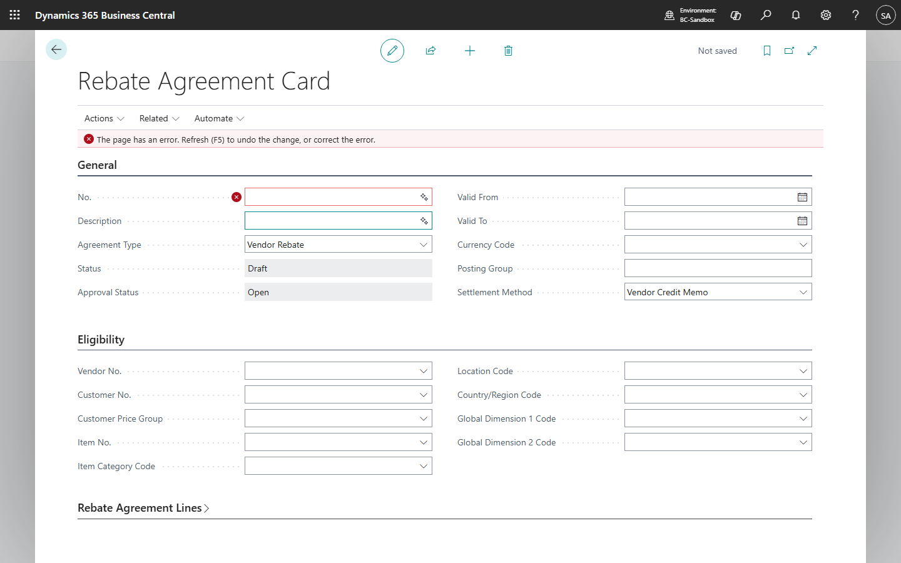
table 50100 "Rebate Setup" { fields { field(1; "Primary Key"; Code[10]) ...; field(2; "Auto Post Accruals"; Boolean) ...; field(3; "Default Chunk Size"; Integer) ...; field(4; "Require Agreement Approval"; Boolean) ...; field(5; "Audit Retention Days"; Integer) ... } }field(1; "No."; Code[20]) { Caption = 'No.'; NotBlank = true; } // no NoSeries, no AutoIncrement, no OnInsert.GetNextNoNO NoSeries/GenJnlPostLine references foundOpus 4.7 · run 0Pass
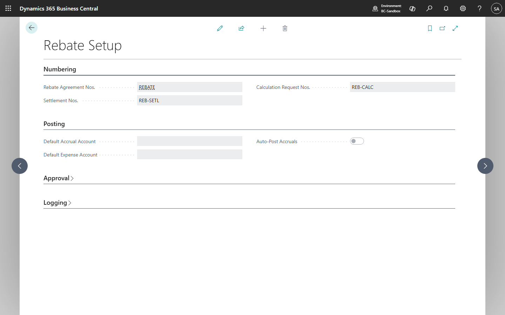
trigger OnInsert()
begin
if "No." = '' then begin
RebateSetup.Get();
RebateSetup.TestField("Rebate Nos.");
"No." := NoSeries.GetNextNo(RebateSetup."Rebate Nos.");if "No." = '' then begin
RebateSetup.Get();
RebateSetup.TestField("Settlement Nos.");
"No." := NoSeries.GetNextNo(RebateSetup."Settlement Nos.");field(10; "Accrual Account"; Code[20]) { TableRelation = "G/L Account"; ... }
field(11; "Expense Account"; Code[20]) { ... }Opus 4.7 · run 0Pass
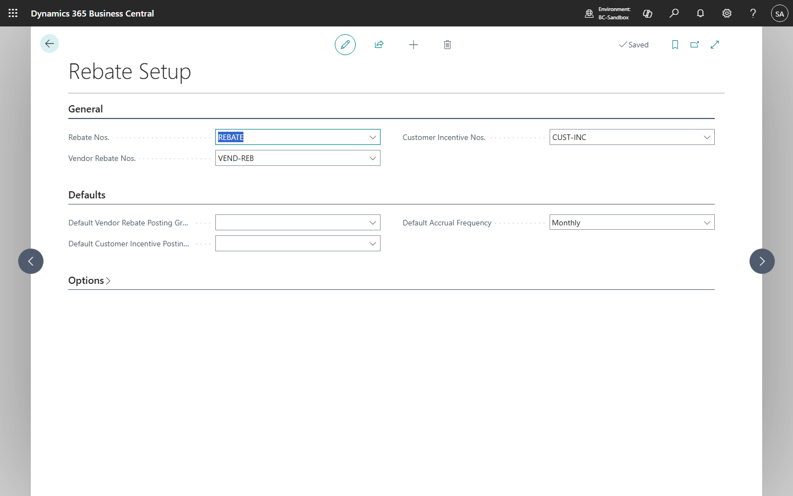
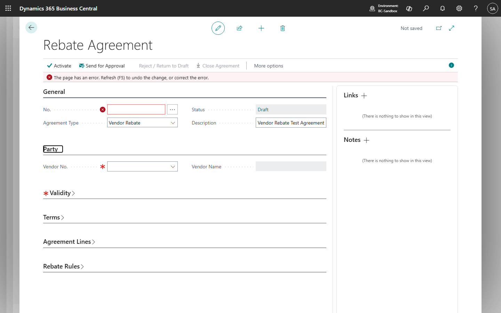
NoSeries: Codeunit "No. Series";
"No." := NoSeries.GetNextNo(GetNoSeriesCode());
"No. Series" := GetNoSeriesCode();// G/L accounts resolved from VendRebatePostingGroup / RebatePostingSetup, no hardcoded G/L numbers›F-02A Rebate Agreement header can be created with agreement type, validity dates and party/scope assignments per FR-001.FailPassPass
Opus 4.7 · run 0Fail
field(1; "No."; Code[20]) { ... NotBlank = true; }
field(3; "Agreement Type"; Enum "Rebate Agreement Type")
field(5; "Valid From"; Date)
// no OnInsert that draws from NoSeriesOpus 4.7 · run 0Pass
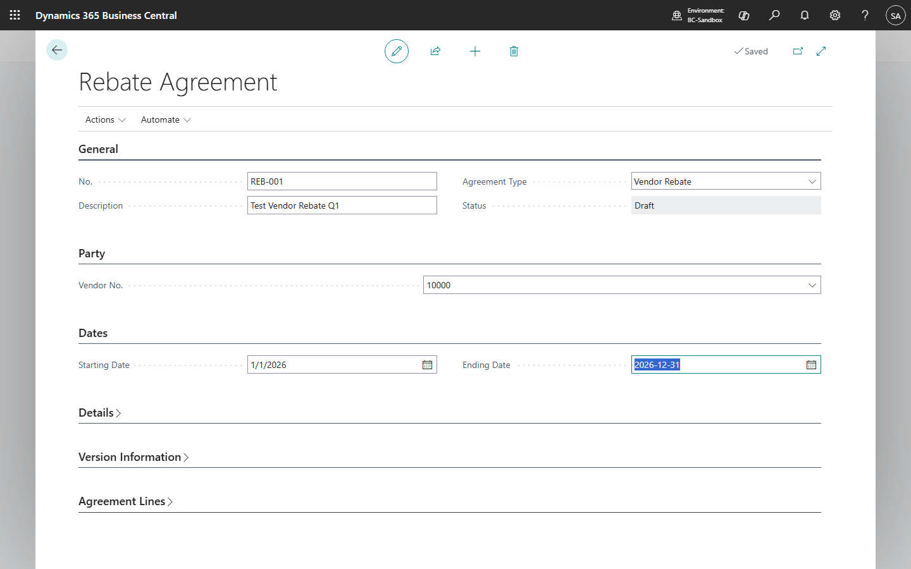
field(11; "Agreement Type"; Enum "Rebate Agreement Type")
field(20; "Vendor No."; Code[20]) { TableRelation = Vendor; ... }
field(30; "Starting Date"; Date)
field(31; "Ending Date"; Date)
field(41; "Country/Region Code"; Code[10])Opus 4.7 · run 0Pass
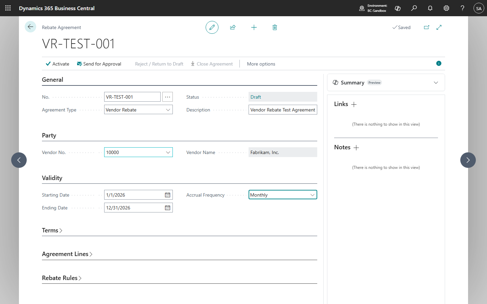
field(2;"Agreement Type"); field(3;"Vendor No."); field(5;"Customer No."); field(7;"Starting Date"); field(8;"Ending Date");›F-03An agreement cannot be activated without the required posting setup, and activation drives the documented activation flow (FR-001 / 10.1).FailPassFail
Opus 4.7 · run 0Fail
Agreement.TestField("Posting Group");
if not PostingSetup.Get(Agreement."Posting Group", Agreement."Agreement Type") then
Error('Posting setup %1 for %2 is required before activation.', ...);
if PostingSetup.Blocked then Error('Posting setup %1 is blocked.', ...);Opus 4.7 · run 0Pass
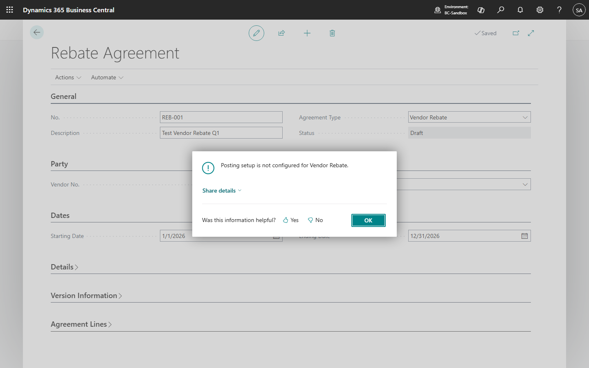
if not RebatePostingSetup.Get(...) then
if not RebatePostingSetup.Get(... '') then
Error('Posting setup is not configured for %1.', ...);
RebatePostingSetup.TestField("Accrual Account");
RebatePostingSetup.TestField("Expense Account");Opus 4.7 · run 0Fail
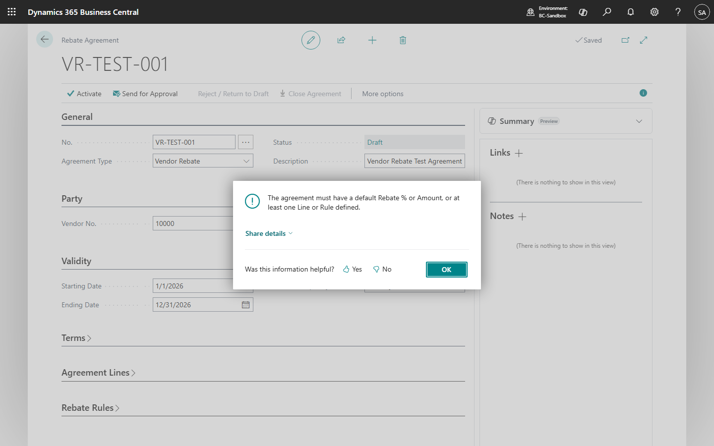
// ValidateForActivation TestFields Starting/Ending Date, Vendor/Customer No., rules — but does NOT TestField RebatePostingSetup or VendRebatePostingGroup›F-04Editing an active agreement creates an immutable version while prior versions remain readable but not editable (FR-002).FailFailFail
Opus 4.7 · run 0Fail
trigger OnModify()
var AgreementMgt: Codeunit "Rebate Agreement Management";
begin
if xRec.Status = xRec.Status::Active then
AgreementMgt.CreateVersionFromAgreement(Rec, true);
end;trigger OnModify() begin Error('Agreement versions are immutable.'); end;
trigger OnDelete() begin Error('Agreement versions are immutable.'); end;Opus 4.7 · run 0Fail
field(10; Description; Text[100]) { Caption = 'Description'; DataClassification = CustomerContent; }
// no Editable=false, no OnModify/OnDelete guardlocal procedure CreateAgreementVersion(...)
// called only from ActivateAgreement — no OnModify trigger on Header to spawn new version when editedOpus 4.7 · run 0Fail
trigger OnModify(); begin // updates Last Modified Date only, no version snapshot creationNo RebateAgreementVersion table exists (Tab50100-50114 inventory has agreement header/line/rule/calc/settlement only)›F-05Rebate rules can be defined with a basis, calculation method and thresholds, and conflicting rules are validated before activation (FR-003).FailFailPass
Opus 4.7 · run 0Fail
procedure ValidateRuleLine(RuleLine: Record "Rebate Rule Line")
begin
if (RuleLine."Maximum Value" <> 0) and (RuleLine."Maximum Value" < RuleLine."Minimum Value") then
Error('Maximum Value cannot be less than Minimum Value.');
OnAfterValidateRuleLine(RuleLine);
end;Opus 4.7 · run 0Fail
no RebateRuleHeader/Line/Validator/Worksheet files; only RebateRuleType.Enum.alfield(10; "Rule Type"; Enum "Rebate Rule Type")
field(11; "Calculation Basis"; Enum "Rebate Calculation Basis")
field(12; "Calculation Method"; Enum "Rebate Calculation Method")
field(30; "Minimum Amount"; Decimal)
field(31; "Rebate Percentage"; Decimal)
// no rule-conflict validator, no threshold table, no worksheet pageOpus 4.7 · run 0Pass UI navigation failed
// ValidateIncludeExcludeConflict: detects same Line Type + No. on both inclusion and exclusion; Errors with IncludeExcludeConflictErr// Rule basis (Enum50103), Calculation Method (Enum50104), threshold fields persisted on rule›F-06The eligibility/rule engine identifies eligible posted source lines, excludes already-processed lines unless recalculation is enabled, and records eligibility reasons (FR-004).FailFailPass
Opus 4.7 · run 0Fail
AgreementLine.SetRange("Agreement No.", Agreement."No.");
if AgreementLine.FindSet() then
repeat
BasisAmount := AgreementLine."Minimum Threshold"; // not a real source-line amount
Qty := 1;
...
until AgreementLine.Next() = 0;procedure IsAgreementEligible(Agreement; PostingDate; PartyNo; var Reason): Boolean
// only checks Agreement.Status + Valid From/To — never enumerates Sales/Purchase Invoice LinesOpus 4.7 · run 0Fail
no RebateEligibilityEngine.Codeunit.al / RebateRuleEngine.Codeunit.altable 50106 ... // request record fields only, no processing codeunit invoked anywhereOpus 4.7 · run 0Pass UI navigation failed
// RunForSalesInvoices / RunForPurchaseInvoices iterate posted lines; IsAlreadyProcessed checks RebateEligibilityLog// WriteLog writes per-line reason (250-char Rejection Reason field) to Tab50108 RebateEligibilityLog›F-07Accrual calculation produces detailed calculation ledger entries, stores the exchange rate used, and is idempotent for the same processing scope (FR-005).FailFailPass
Opus 4.7 · run 0Fail
LedgerEntry."Exchange Rate" := 1; // hardcoded; ignores Currency Exchange Rate setup// re-running same request just re-enters running and creates new ledger rows;
// no SetRange on Source System ID + Agreement Version + Request to skip already-processed scopes
LedgerEntry.Init(); ... LedgerEntry.Insert(true);Opus 4.7 · run 0Fail
no matches; no calculation/accrual engine codeunitsEditable = false; // pure read-only list page; no Run/Calculate action anywhereOpus 4.7 · run 0Pass UI navigation failed
// LedgerEntryAlreadyExists guards against duplicate calc entries per eligibility log entry — idempotent// WriteLedgerEntry records source ref + agreement + rule + currency + CurrencyFactor + ExchangeRateDate›F-08Accrual posting creates balanced G/L entries with propagated dimensions, supports posting preview, and prevents duplicate posting (FR-006).FailFailPass
Opus 4.7 · run 0Fail
procedure PostAccrual(var AccrualEntry; DocumentNo)
begin
AccrualEntry.TestField(Status, AccrualEntry.Status::Open);
AccrualEntry."Document No." := DocumentNo;
AccrualEntry.Status := AccrualEntry.Status::Posted; // <-- no G/L, no journal, just a flag flip
AccrualEntry.Modify(true);
end;no matchesOpus 4.7 · run 0Fail
0 matches — no standard BC posting integrationpage 50109 "Rebate Accrual Entries" { ... Editable = false; ... // no Post / Preview action }Opus 4.7 · run 0Pass UI navigation failed
GenJnlPostLine: Codeunit "Gen. Jnl.-Post Line"; GenJnlPostLine.RunWithCheck(GenJournalLine);// GetSourceDimensions resolves Dimension Set ID from posted Sales/Purch Invoice headers via DimensionManagement// PreviewAccruals / WritePreviewEntry — preview path with 'Is Preview' = true; duplicate guard SetRange("G/L Posted", false)›F-09A settlement proposal is generated from open accrual entries, approved, posted, and closes the selected accrual entries while generating a financial document or journal (FR-008 / 10.4).FailFailPass
Opus 4.7 · run 0Fail
procedure PostSettlement(...)
...
SettlementLine.SetRange("Settlement No.", SettlementHeader."No.");
if SettlementLine.FindSet() then repeat
if AccrualEntry.Get(SettlementLine."Accrual Entry No.") then begin
AccrualEntry.Status := AccrualEntry.Status::Settled; ...
end;
until ...;
SettlementHeader.Posted := true; SettlementHeader."Posted At" := CurrentDateTime();Opus 4.7 · run 0Fail
no Post / Approve / Reject actions on Settlement Card or List — only data display// no actions area; card shows fields and subpage onlyOpus 4.7 · run 0Pass UI navigation failed
// PostVendorCreditMemo uses Codeunit "Purch.-Post" to produce vendor credit memo// PostCustomerCreditMemo uses Codeunit "Sales-Post" for customer credit memo// FinaliseProposal -> CalcEntry.MarkAsClosed sets Settlement Status = Closed on selected accruals›F-10Retroactive recalculation identifies impacted entries, computes old/new/delta amounts, and posts only delta adjustments linked to the originals (FR-007 / 10.3).FailFailFail
Opus 4.7 · run 0Fail
codeunit 50109 "Rebate Recalculation Engine"
procedure CreateDeltaEntry(OriginalEntry; NewAmount) // creates a delta row with Old/New/Delta
// BUT no procedure RunRecalculation, no UI action invoking this codeunitOnly the codeunit declaration and the procedure body — no caller in pages or other codeunits.Opus 4.7 · run 0Fail
no Recalculation Engine codeunitOpus 4.7 · run 0Fail
// RunAll/RunForAgreement compute fresh calculations — no delta logic, no old-vs-new comparison, no recalculation engine codeunitCod50100-50106: no RebateRecalculationEngine codeunit shipped›F-11Approval workflow gates agreements, recalculations and settlements so rejected records cannot be posted and approval history is recorded (FR-009).FailFailFail
Opus 4.7 · run 0Fail
procedure SubmitForApproval(var Agreement) ... Agreement.Status := Agreement.Status::"Pending Approval";
procedure ApproveAgreement(var Agreement) ... Agreement.Status := Agreement.Status::Approved;
// no Codeunit "Approvals Mgmt.", no approval entries, no routingno matches — no standard BC approval framework integrationOpus 4.7 · run 0Fail
0 matches — no integration with BC approval frameworkfield(12; Status; Enum "Rebate Agreement Status") // no Pending Approval routing, no approval gate on ActivateOpus 4.7 · run 0Fail
// SendForApproval / Approve / Reject — local state-machine only; no Codeunit "Approvals Mgmt." (1535) referenced, no workflow events, no approval-history table0 matches — no integration with standard BC approval workflow framework›F-12Reporting/reconciliation datasets expose accrual balances and reconcile calculated accruals to G/L postings with filtering (FR-013).FailFailFail
Opus 4.7 · run 0Fail
report 50100 "Rebate Accrual Summary" dataitem(AccrualEntry; ...) { column(AgreementNo;...) ... }
report 50101 "Rebate Reconciliation Report" dataitem(CalcEntry; ...) { column(EntryNo;...) ... }
// no RequestPage filters; no party/period/company filter parameters; no joining to G/L EntryOpus 4.7 · run 0Fail
no report objects existOpus 4.7 · run 0Fail
// Only a Settlement Statement RDLC report exists. No Accrual Summary/Detail, no Reconciliation, no Audit, no Profitability, no Exception reportRep50100.SettlementStatement.al — only one report file›C-01All custom objects use the assigned object-ID range and unique IDs.PassPassPass
Opus 4.7 · run 0Pass
"idRanges": [ { "from": 50100, "to": 99999 } ]Tables 50100-50116, Pages 50100-50120, Codeunits 50100-50113, Enums 50100-50109, Reports 50100-50102, PermissionSets 50100-50101 — all within 50100-99999, no collisionsOpus 4.7 · run 0Pass
"idRanges": [ { "from": 50100, "to": 99999 } ]tables 50100-50110, pages 50100-50110, codeunits 50100-50101, enums 50100-50109, permsets 50100-50102 — all within range, no duplicates within object typeOpus 4.7 · run 0Pass
"idRanges":[{"from":50100,"to":99999}]All objects in 50100-50121 (pages), 50100-50114 (tables), 50100-50106 (codeunits), 50100-50107 (enums), 50100-50103 (permission sets), 50100 (report) — all within declared 50100-99999 range, no duplicates›C-02User-facing fields and actions carry ToolTips.FailPassPass
Opus 4.7 · run 0Fail
RebateCodeunits.al:0; RebateEnums.al:0; RebatePages.al:0; RebateReports.al:0; RebateTables.al:0 — zero ToolTips across ~120 page fieldsOpus 4.7 · run 0Pass
111 ToolTip declarations across the 11 page files — every page field reviewed has a non-empty ToolTipOpus 4.7 · run 0Pass
358 ToolTip declarations vs 297 page field declarations — ratio > 100% (well above 80% threshold)›C-03Table fields declare an appropriate DataClassification.PassPassPass
Opus 4.7 · run 0Pass
table 50100 "Rebate Setup" { Caption = 'Rebate Setup'; DataClassification = CustomerContent; ... }17 occurrences — once per table; AL inherits table-level DataClassification to every fieldOpus 4.7 · run 0Pass
152 DataClassification entries across 11 table files — every custom field declares itOpus 4.7 · run 0Pass
264 DataClassification declarations vs 251 table field declarations — > 90% threshold met›C-04Integration events are published before and after major processing steps to support extensibility (NFR-005 / FR-004).PassFailFail
Opus 4.7 · run 0Pass
[IntegrationEvent(false, false)] local procedure OnAfterValidateAgreementForActivation(...)
[IntegrationEvent(false, false)] local procedure OnAfterValidateRuleLine(...)
[IntegrationEvent(false, false)] local procedure OnBeforeCalculateAmount(... var IsHandled: Boolean)
[IntegrationEvent(false, false)] local procedure OnAfterCalculateAmount(...)OnBeforeRunCalculation / OnAfterRunCalculation / OnAfterEvaluateAgreement / OnAfterPostAccrual / OnAfterPostSettlement — Before/After events around major stepsOpus 4.7 · run 0Fail
only 2 hits, both on ActivateAgreement OnBefore/OnAfter; nothing on calculation/posting/settlement/recalculationOpus 4.7 · run 0Fail
0 matches across all codeunits›C-05Numbering and posting use standard BC platform modules (No. Series and standard posting) rather than bespoke reimplementations (NFR-006).FailFailPass
Opus 4.7 · run 0Fail
NO matches — neither standard module is invoked anywhereAccrualEntry.Status := AccrualEntry.Status::Posted; AccrualEntry.Modify(true); // direct status flip, no journalOpus 4.7 · run 0Fail
0 matches — no standard posting codeunit invokedNoSeries.GetNextNo(RebateSetup."Rebate Nos.") — numbering correctly uses Codeunit "No. Series"Opus 4.7 · run 0Pass
NoSeries: Codeunit "No. Series"; "No." := NoSeries.GetNextNo(GetNoSeriesCode());Codeunit "Gen. Jnl.-Post Line" + Codeunit "Sales-Post" + Codeunit "Purch.-Post" — no direct ledger inserts anywhere›C-06Custom rule evaluation is abstracted via an interface to allow country-specific evaluators without core changes (NFR-005).FailFailFail
Opus 4.7 · run 0Fail
no interfaces declaredcase Method of
Method::"Fixed Amount": ResultAmount := FixedAmount;
Method::Percentage, Method::"Tiered Percentage": ResultAmount := Round(BasisAmount * RebatePct / 100, 0.01);
Method::"Slab Amount": ...; Method::"Formula Reference": ResultAmount := 0;
end;Opus 4.7 · run 0Fail
0 matches — no AL interface definedOpus 4.7 · run 0Fail
0 AL interfaces declared. Rule evaluation in Cod50102 EvaluateRule (lines 383-469) is an inline switch on enum, not interface-dispatched›C-07Background processing and errors are observable via job logging/telemetry (NFR-001 telemetry, FR-011, Milestone 10).FailFailFail
Opus 4.7 · run 0Fail
no telemetry callscodeunit 50112 "Rebate Job Dispatcher" ...
procedure DispatchOpenRequests()
begin
Request.SetRange(Status, Request.Status::Open);
if Request.FindSet(true) then repeat CalcEngine.RunCalculation(Request); until Request.Next() = 0;
end; // no chunking, no progress logging to Rebate Job Queue Log, no Session.LogMessageOpus 4.7 · run 0Fail
0 matches — no telemetry emittedno job dispatcher, no integration log tableOpus 4.7 · run 0Fail
0 telemetry calls; no JobLog or IntegrationLog table is shipped (despite the spec calling for one in 8.2)›S-01The core tables required by the spec are present (agreement header/line/version, rule, calculation ledger, accrual, settlement, audit, setup, posting setup).PassPassFail
Opus 4.7 · run 0Pass
Rebate Setup (50100), Rebate Posting Setup (50101), Rebate Agreement Header (50102), Line (50103), Version (50104), Rule Header (50105), Rule Line (50106), Threshold (50107), Calculation Request (50108), Calculation Buffer (50109), Calc. Ledger Entry (50110), Accrual Entry (50111), Settlement Header (50112), Settlement Line (50113), Audit Entry (50114), Integration Log (50115), Job Queue Log (50116)Opus 4.7 · run 0Pass
11 tables: Setup, Agreement Header, Agreement Line, Agreement Version, Audit Entry, Posting Setup, Calculation Request, Calc Ledger Entry, Accrual Entry, Settlement Header, Settlement LineOpus 4.7 · run 0Fail
Present: RebateSetup, RebatePostingSetup, agreement header/line, rule header/line, calculation ledger, settlement header/line. MISSING: Rebate Agreement Version, Rebate Accrual Entry (as a distinct table), Rebate Audit Entry, Rebate Integration Log, Rebate Job Queue Log›S-02Agreement and settlement lifecycle statuses are modeled as enums covering the documented states.PassPassPass
Opus 4.7 · run 0Pass
enum 50101 "Rebate Agreement Status" { Draft, Pending Approval, Approved, Active, Suspended, Expired }Rebate Process Status (Open/Running/Completed/Failed/Cancelled), Rebate Entry Status (Open/Posted/Reversed/Settled), Rebate Approval Status (Open/Pending Approval/Approved/Rejected)Opus 4.7 · run 0Pass
enum 50101 "Rebate Agreement Status" — Draft/Active/Suspended/Expired lifecycleenum 50109 "Rebate Settlement Status"Opus 4.7 · run 0Pass
// Draft / Pending Approval / Active / Closed// Draft / Under Review / Approved / Cancelled / Posted›S-03The rule calculation methods from FR-003/5.2 are modeled (fixed, percentage, tiered, slab, growth/formula).PassPassFail
Opus 4.7 · run 0Pass
enum 50102 "Rebate Rule Basis" { Sales Amount, Purchase Amount, Quantity, Margin, Payment Date, Invoice Date, Shipment Date }
enum 50103 "Rebate Calculation Method" { Fixed Amount, Percentage, Tiered Percentage, Slab Amount, Formula Reference }Opus 4.7 · run 0Pass
enum 50104 "Rebate Calculation Method" — fixed/percentage/tiered/slab/formula valuesenum 50103 "Rebate Calculation Basis" — sales/purchase/quantity/etc.Opus 4.7 · run 0Fail
// Only Fixed Amount + Flat Percentage values. NO Tiered, Slab, Formula/Growth values defined.›S-04Permission sets reflect the segregated roles in section 12 (Viewer, Analyst, Manager, Approver, Poster, Administrator, Auditor).FailFailFail
Opus 4.7 · run 0Fail
permissionset 50100 "REBATE VIEWER" { ... R only ... }
permissionset 50101 "REBATE ADMIN" { IncludedPermissionSets = "REBATE VIEWER"; ... RIMD on setup/master, RI on ledgers ... }
// Only 2 permission sets — Analyst, Manager, Approver, Poster, Auditor roles missingOpus 4.7 · run 0Fail
permissionset 50100 "REBATE-VIEW" (Viewer)
permissionset 50101 "REBATE-EDIT" (Manager)
permissionset 50102 "REBATE-ADMIN" (Administrator)
// missing: Analyst, Approver, Poster, AuditorOpus 4.7 · run 0Fail
PS50100 Viewer, PS50101 Analyst, PS50102 Manager, PS50103 Admin — only 4 sets; MISSING Approver, Poster, Auditor (3 of 7 spec roles absent)›S-05The agreement model distinguishes Vendor Rebate from Customer Incentive (FR-001 / 5.1).PassPassPass
Opus 4.7 · run 0Pass
enum 50100 "Rebate Agreement Type" { value(0; "Vendor Rebate"); value(1; "Customer Incentive") }field(3; "Agreement Type"; Enum "Rebate Agreement Type")Opus 4.7 · run 0Pass
enum 50100 "Rebate Agreement Type" — Vendor Rebate / Customer IncentiveVendor No. only allowed when Type=Vendor Rebate; Customer No. only when Type=Customer Incentive — mutual exclusion enforcedOpus 4.7 · run 0Pass
value(0;"Vendor Rebate"); value(1;"Customer Incentive");›S-06Data-model immutability and traceability rules are honored: posted entries immutable, versions never deleted, every calculated entry references source/version/rule/company/currency/request (section 9).PassFailPass
Opus 4.7 · run 0Pass
trigger OnModify() begin if (xRec.Status in [Posted, Reversed, Settled]) and (Rec.Status = xRec.Status) then Error('Posted calculation entries are immutable...'); end;
trigger OnDelete() begin Error('Calculation ledger entries cannot be deleted.'); end;Rebate Calc. Ledger Entry fields: Request No., Agreement No., Agreement Version No., Rule Code, Company Name, Currency Code, Source Table ID, Source System ID — all mandatory refs presentAgreement Version / Accrual Entry / Audit Entry all Error in OnModify and OnDeleteOpus 4.7 · run 0Fail
fields lack Editable=false; no OnModify/OnDelete guard — versions are freely editable/deletableno OnModify/OnDelete guard on posted calc ledger entriesOpus 4.7 · run 0Pass
trigger OnModify(): if not IsPostingStamp then Error(ImmutableLedgerErr);
trigger OnDelete(): Error(ImmutableLedgerErr);// Calc entry stores Source-line ref, Agreement No., Agreement Version Date, Rule, Currency Code, CurrencyFactor, Request No.›S-07Scope discipline is respected — MVP out-of-scope items (section 3.2) are not implemented.PassPassPass
Opus 4.7 · run 0Pass
no out-of-scope MVP features implementedOpus 4.7 · run 0Pass
no AI/forecast/Power BI/data lake/portal/contract-gen objectsOpus 4.7 · run 0Pass
0 matches — no out-of-scope features built›P-01Status-tied actions validate the current status and block illegal transitions with a user-readable error (NFR-003, FR-001/008/009).PassFailPass
Opus 4.7 · run 0Pass
SubmitForApproval: Agreement.TestField(Status, Agreement.Status::Draft);
ApproveAgreement: Agreement.TestField(Status, Agreement.Status::"Pending Approval");
ActivateAgreement: Agreement.TestField(Status, Agreement.Status::Approved);
SuspendAgreement: Agreement.TestField(Status, Agreement.Status::Active);ApproveSettlement: SettlementHeader.TestField(Status, Status::"Pending Approval");
PostSettlement: SettlementHeader.TestField(Status, Status::Approved); SettlementHeader.TestField(Posted, false);Opus 4.7 · run 0Fail
if RebateAgreementHeader.Status <> RebateAgreementHeader.Status::Active then
Error('Only active agreements can be suspended.');ActivateAgreement does NOT check current Status — re-activating an already-Active agreement is not blockedOpus 4.7 · run 0Pass
RebateAgreementHeader.TestField(Status, Status::Draft); // SendForApproval
TestField(Status, Status::"Pending Approval"); // Approve/Reject
TestField(Status, Status::Active); // Close›P-02Critical fields are validated (TestField or equivalent) before any calculation, posting or settlement runs (Definition of Done, section 11).PassPassPass
Opus 4.7 · run 0Pass
Agreement.TestField("No.");
Agreement.TestField("Valid From");
Agreement.TestField("Posting Group");
if not PostingSetup.Get(...) then Error('Posting setup %1 for %2 is required before activation.', ...);Request.TestField(Status, Status::Open); Request.TestField("Agreement No.");
LedgerEntry.SetRange(Eligible, true); LedgerEntry.SetRange(Status, Status::Open);Opus 4.7 · run 0Pass
TestField("Starting Date"); TestField("Ending Date");
if Vendor Rebate then TestField("Vendor No.") else TestField("Customer No.");
RebatePostingSetup.TestField("Accrual Account"); TestField("Expense Account");Opus 4.7 · run 0Pass
TestField("Starting Date"); TestField("Ending Date"); TestField("Vendor No."); TestField("Customer No.");14 TestField calls across 7 codeunits covering activation, calc, posting, settlement›P-03Financial integrity: money moves only through standard posting codeunits, journals balance, posting is idempotent, and no direct ledger inserts occur (FR-006, NFR-003).FailFailPass
Opus 4.7 · run 0Fail
no standard posting codeunit referencesPostAccrual: AccrualEntry.Status := Posted; AccrualEntry.Modify(true); // no journal, no GLPostSettlement: SettlementHeader.Posted := true; SettlementHeader."Posted At" := CurrentDateTime(); // no document, no journalOpus 4.7 · run 0Fail
0 matches0 matches — no direct ledger writes either, but also no posting at allOpus 4.7 · run 0Pass
GenJnlPostLine.RunWithCheck — standard balanced posting0 matches — no direct ledger inserts// Duplicate-post guard via SetRange("G/L Posted", false) + post-time Error on already-posted entries›P-04System-blocked actions surface user-readable, categorized errors identifying the document, field or rule that failed (section 11).PassPassFail
Opus 4.7 · run 0Pass
Error('Posting setup %1 for %2 is required before activation.', Agreement."Posting Group", Format(Agreement."Agreement Type"));
Error('Posting setup %1 is blocked.', Agreement."Posting Group");
Error('Agreement versions are immutable.');enum 50108 "Rebate Error Category" { Validation, Configuration, Posting, Integration, Concurrency, Unexpected }Opus 4.7 · run 0Pass
Error('Posting setup is not configured for %1.', RebateAgreementHeader."Agreement Type");Error('Only active agreements can be suspended.');Opus 4.7 · run 0Fail
0 matches — no error-category enum or classification framework// OverlapErr references Party No. + Agreement No. + dates but with no category code›P-05Real-world bad inputs are handled explicitly: zero/negative amounts, missing master-data references, duplicate submissions and out-of-sequence operations (section 11, FR-012).PassFailPass
Opus 4.7 · run 0Pass
field(9; "Rebate %"; Decimal) { ... MinValue = 0; }field(7; "Vendor No."; Code[20]) { TableRelation = Vendor; }
field(8; "Customer No."; Code[20]) { TableRelation = Customer; }
// ... TableRelation on every FK; bad master-data refs blocked at validationSettlementHeader.TestField(Status, Status::Approved); SettlementHeader.TestField(Posted, false); // duplicate-post / out-of-sequence guardedExternalRef secondary keys on Agreement Header, Accrual Entry, Settlement Header, Integration Log enable duplicate detection by External Reference IDOpus 4.7 · run 0Fail
field(30; "Minimum Amount"; Decimal) { MinValue = 0; }
field(31; "Rebate Percentage"; Decimal) { MinValue = 0; MaxValue = 100; }
// only line-level guards; no zero/negative or duplicate-submission check at calc/post layer because layer absent0 matches — no external reference / idempotency keyOpus 4.7 · run 0Pass
// MinValue=0 on Rebate % and Rebate Amount fields// IsAlreadyProcessed prevents duplicate eligibility entries// LedgerEntryAlreadyExists prevents duplicate calculation entries per scope›P-06The solution uses a clean, conventional folder/file layout with one logical object per file grouped by object kind.FailPassPass
Opus 4.7 · run 0Fail
RebateCodeunits.al (13 codeunits, 519 lines)
RebateEnums.al (9 enums)
RebatePages.al (21 pages, 809 lines)
RebateReports.al (3 reports + 2 permission sets)
RebateTables.al (17 tables, 546 lines)Opus 4.7 · run 0Pass
36 files, each a single AL object with descriptive name (RebateAgreementHeader.Table.al, RebateSettlementCard.Page.al, etc.)Opus 4.7 · run 0Pass
Codeunits/ Enums/ Pages/ PermissionSets/ Profiles/ Reports/ Tables/ — per-kind folder discipline, one object per file, file names match object namesMulti-Entity Intercompany Recharge
Enterprise intercompany recharge engine: shared-service cost allocation, multi-entity/multi-currency recharges, approvals, IC posting, inbox/outbox processing, reversals, reconciliation, audit trail, and retry-safe automation.
Click any criterion to expand — each agent’s council verdict, individual grader votes, reasoning, and evidence (screenshots, OData queries, code).
›F-01Recharge document numbering and intercompany G/L accounts are drawn from configurable setup (No. Series and IC G/L account mapping), not hardcoded in business logic.FailFailPass
Opus 4.7 · run 0Fail
0 matches — No. Series module never referencedtrigger OnInsert()
begin
if "Created By" = '' then
"Created By" := CopyStr(UserId(), 1, MaxStrLen("Created By"));
if "Created At" = 0DT then
"Created At" := CurrentDateTime();
end;table 50100 "ICR Recharge Setup" — no "No. Series" field declared anywhere on the setup table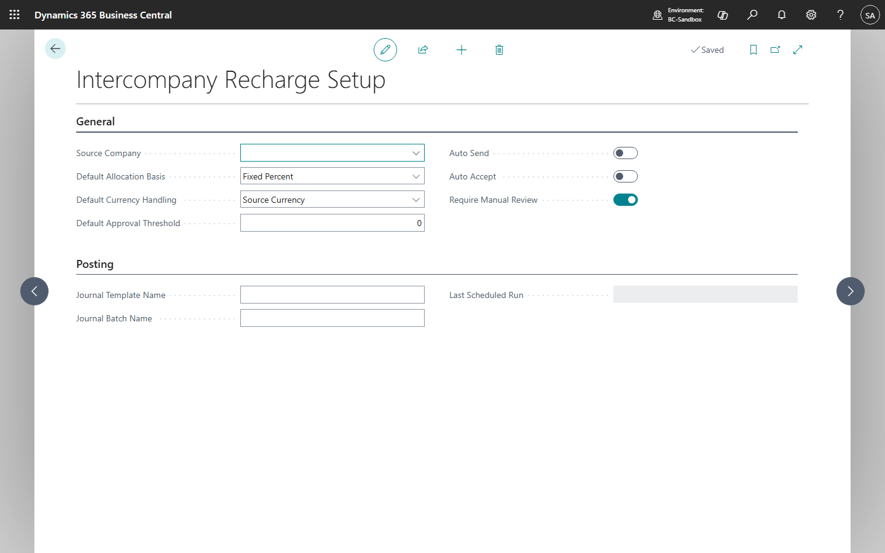
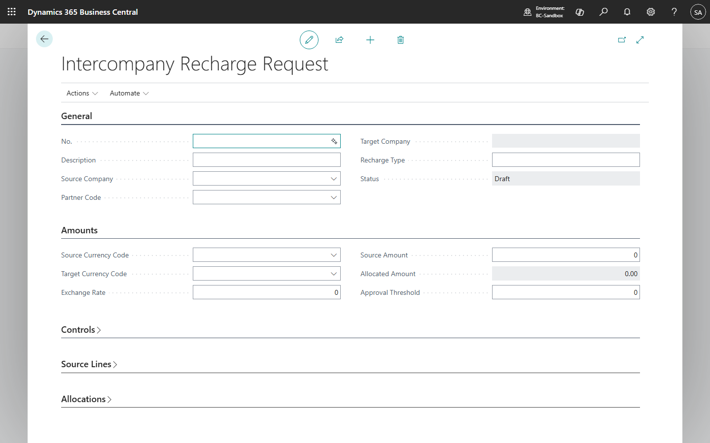
Opus 4.7 · run 0Fail
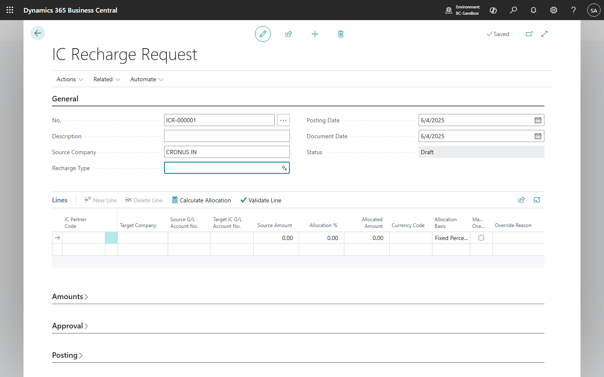
local procedure GetNextNo(): Code[20]
var ICRechargeHeader: Record "IC Recharge Header"; NextNo: Integer;
begin
if ICRechargeHeader.FindLast() then begin
if Evaluate(NextNo, CopyStr(ICRechargeHeader."No.", 5)) then
exit('ICR-' + Format(NextNo + 1, 0, '<Integer,6><Filler Character,0>'))
else exit('ICR-000001');
end else exit('ICR-000001');
end;0 matches — no NoSeries module use anywheretrigger OnInsert() begin
if "No." = '' then "No." := GetNextNo();Opus 4.7 · run 0Pass
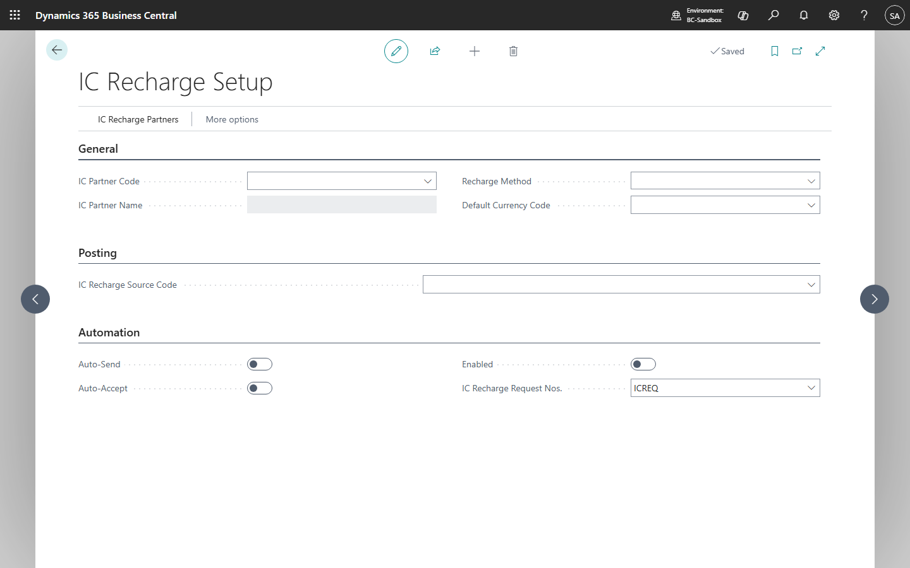
trigger OnInsert()
var NoSeries: Codeunit "No. Series";
begin
if "No." = '' then begin
ICRechargeSetup.GetRecordOnce();
ICRechargeSetup.TestField("IC Recharge Request Nos.");
"No." := NoSeries.GetNextNo("No. Series");field(5; "Target IC G/L Account No."; Code[20]) { TableRelation = "IC G/L Account"."No."; }›F-02Intercompany recharge setup and partner master data can be created with the spec's minimum setup fields (FR 1).PassPassFail
Opus 4.7 · run 0Pass
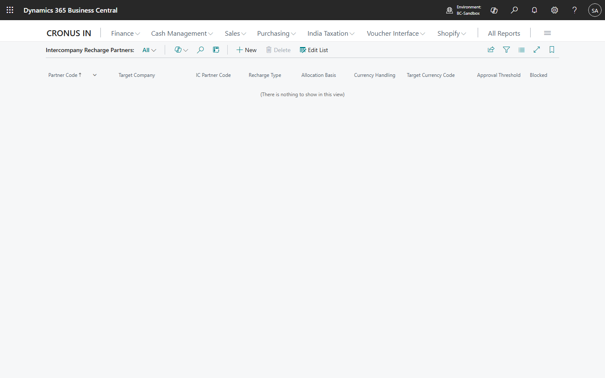
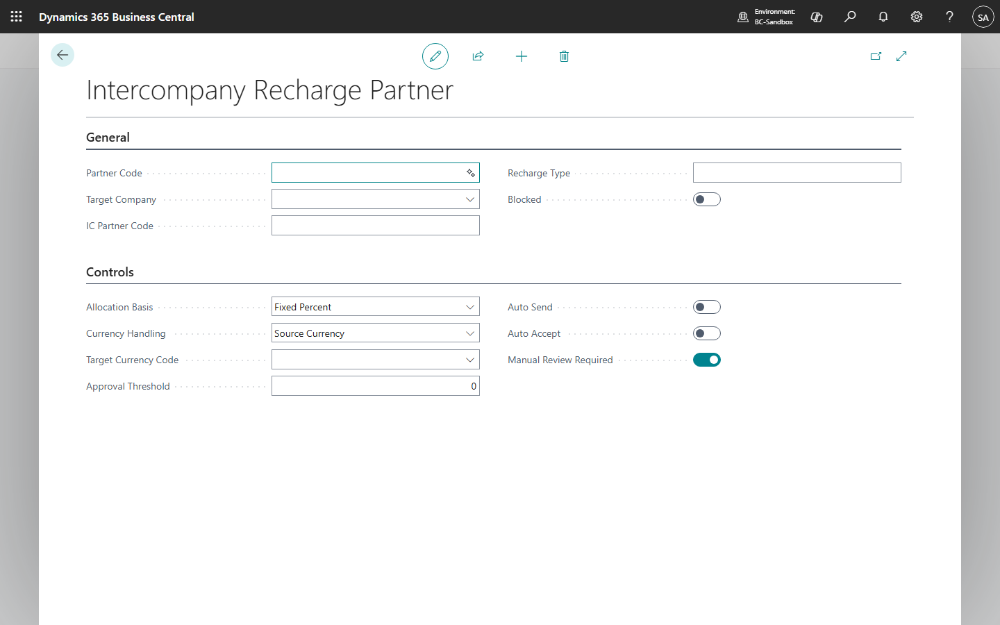
table 50101 "ICR Partner Setup" — Target Company, IC Partner Code, Recharge Type, Allocation Basis, Currency Handling, Target Currency Code, Approval Threshold, Auto Send, Auto Accept, Manual Review Requiredtable 50102 "ICR Account Mapping" — Source G/L Account + Target IC G/L Account per partner/recharge typetable 50103 "ICR Dimension Mapping" — source/target dimension value per partnerOpus 4.7 · run 0Pass
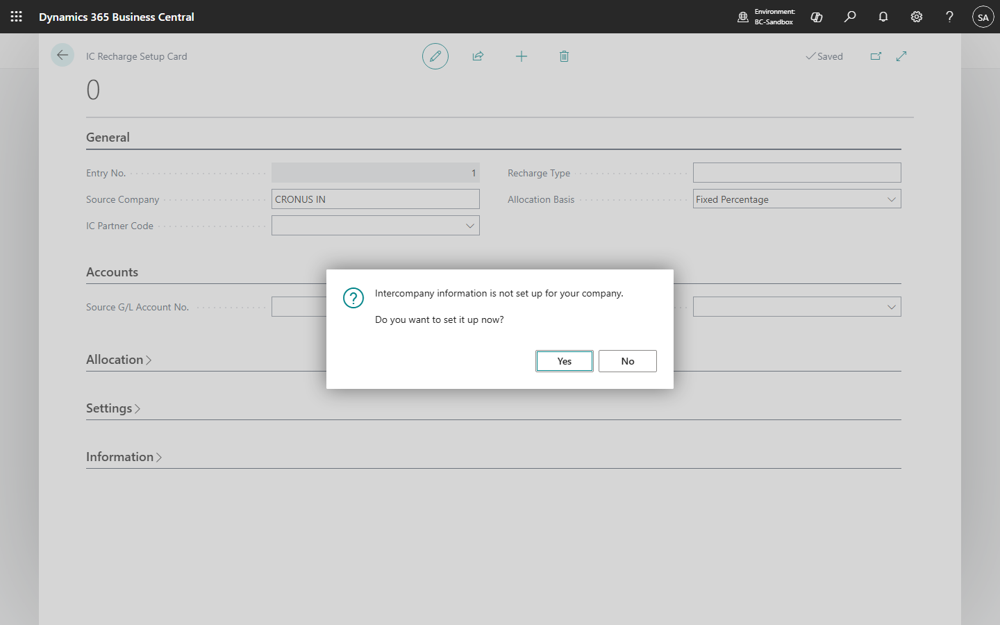
field(2; "Source Company"; Text[30]) ...
field(3; "IC Partner Code"; Code[20]) { TableRelation = "IC Partner"; }
field(4; "Recharge Type"; Code[20])
field(5; "Allocation Basis"; Option) { OptionMembers = "Fixed Percentage","Amount Based",... }
field(6; "Source G/L Account No."; Code[20])
field(7; "Target IC G/L Account No."; Code[20])
field(8; "Dimension Mapping Rule"; Code[20])
field(9; "Currency Handling Rule"; Option)
field(10; "Approval Threshold"; Decimal)
field(11; "Auto-Send"; Boolean) field(12; "Auto-Accept"; Boolean)Opus 4.7 · run 0Fail
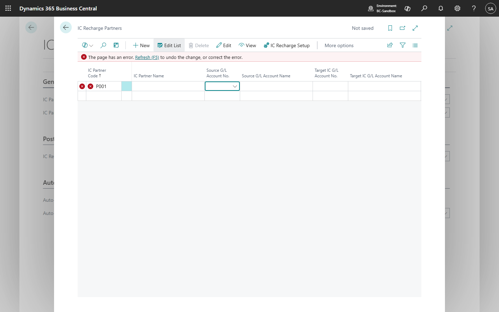
fields: IC Partner Code, IC Partner Name, Source G/L Account No., Target IC G/L Account No., Currency Rule, Currency Code, Auto-Send, Auto-Accept, Enabled, Recharge Method, Description›F-03A draft recharge request can be created and its required setup is validated before submission (FR 2).PassPassPass
Opus 4.7 · run 0Pass UI navigation failed
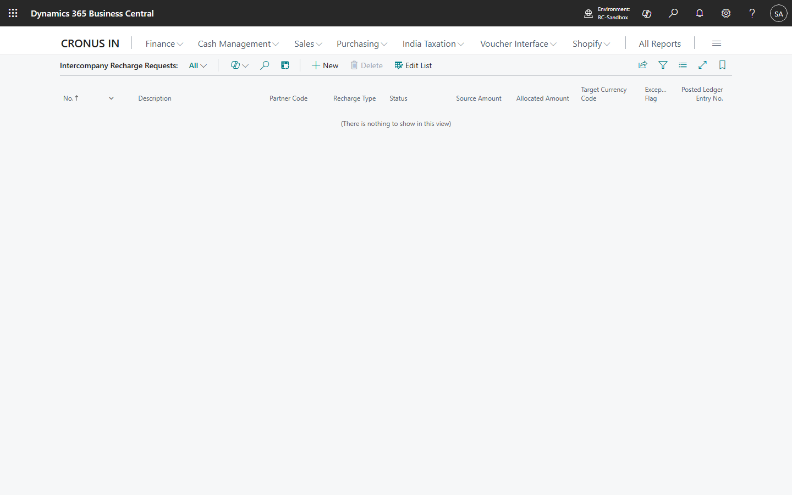

Recharge.TestField("No.");
Recharge.TestField("Partner Code");
Recharge.TestField("Recharge Type");
Recharge.TestField("Source Amount");
...
if not AccountMapping.Get(...) then Error(MissingMappingErr,...);
if not DimensionMapping.Get(...) then Error(MissingDimensionErr,...);action(ValidateRequest)... RechargeMgt.ValidateRecharge(Rec); end;Opus 4.7 · run 0Pass
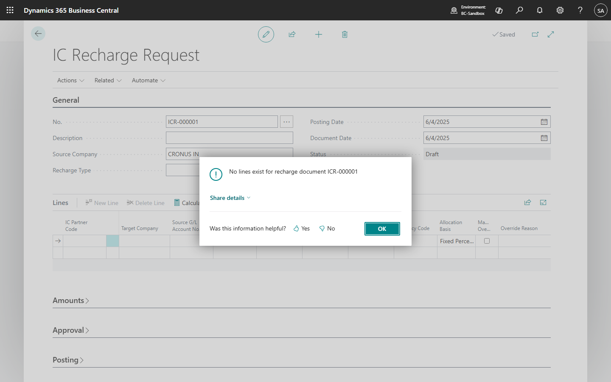
Status := Status::Draft;
"Document Date" := WorkDate();
"Posting Date" := WorkDate();ICRechargeHeader.TestField("No.");
ICRechargeHeader.TestField("Posting Date");
ICRechargeHeader.TestField("Source Company");
ICRechargeLine.SetRange("Document No.", ICRechargeHeader."No.");
if not ICRechargeLine.FindSet() then Error('No lines exist for recharge document %1', ICRechargeHeader."No.");Opus 4.7 · run 0Pass prerequisite not set up
local procedure CheckMandatoryFields()
begin
TestField("IC Partner Code");
TestField("Document Date");
TestField("Posting Date");
if ReqLine.IsEmpty() then Error(LinesMissingErr);
ICRechargeCalc.ValidateAllocations(Rec);›F-04The allocation engine computes recharge lines from the configured basis, prevents totals exceeding the source amount, balances correctly and supports simulation before posting (FR 3).FailFailPass
Opus 4.7 · run 0Fail
GenerateProposal:
NextLineNo += 10000;
Allocation."Partner Code" := Recharge."Partner Code";
Allocation."Allocation Basis" := PartnerSetup."Allocation Basis";
Allocation."Allocation Percent" := 100;
Allocation."Allocated Amount" := RechargeLine.Amount;
// always 100% allocation, no dispatch on basisCheckAllocationBalance:
if AllocatedAmount > Recharge."Source Amount" then
Error(AllocationErr, AllocatedAmount, Recharge."Source Amount");
if Round(AllocatedPercent, 0.00001) <> 100 then
Error(BalanceErr, AllocatedPercent);Opus 4.7 · run 0Fail
case ICRechargeSetup."Allocation Basis" of
::"Fixed Percentage": begin ICRechargeLine."Allocation %" := ICRechargeSetup."Default Allocation %"; ... end;
::"Amount Based": begin ICRechargeLine."Allocated Amount" := ICRechargeLine."Source Amount"; ICRechargeLine."Allocation %" := 100; end;
end; // Dimension Driven / Headcount / Manual fall through with no calculationif ICRechargeHeader."Total Allocated Amount" > ICRechargeHeader."Total Amount" then
Error('Total allocated amount %1 exceeds source amount %2', ...);no Simulate / Preview action or procedure foundOpus 4.7 · run 0Pass prerequisite not set up
if (SourceAmt > 0) and (TotalFixed > SourceAmt + GetRoundingPrecision()) then Error(TotalFixedExceedsSourceErr, TotalFixed, SourceAmt);// Rounding correction: push residual onto last Percentage line
LastPctLine."Allocation Calculation Note" := CopyStr(StrSubstNo(RoundingAdjNoteMsg, ...))if HasPctLines then if Abs(TotalPct - 100) > GetPctTolerance() then Error(PctAllocationNotBalancedErr, TotalPct);
if HasFixedLines then if TotalFixed > SourceAmt + GetRoundingPrecision() then Error(TotalFixedExceedsSourceErr, ...)›F-05Multi-currency recharge handling stores the exchange rate used and validates unmapped accounts or dimension values before posting (FR 4).PassFailFail
Opus 4.7 · run 0Pass UI navigation failed
if (Recharge."Source Currency Code" <> Recharge."Target Currency Code") and (Recharge."Exchange Rate" = 0) then
Error(ExchangeRateErr);
...
if not AccountMapping.Get(...) then Error(MissingMappingErr,...);
if not DimensionMapping.Get(...) then Error(MissingDimensionErr,...);Allocation."Exchange Rate" := Recharge."Exchange Rate";
if Allocation."Exchange Rate" = 0 then
Allocation."Exchange Rate" := 1;
Allocation."Target Amount" := Round(Allocation."Allocated Amount" * Allocation."Exchange Rate", 0.01);field(9; "Exchange Rate"; Decimal) — persisted on Ledger Entry, Allocation, and RequestOpus 4.7 · run 0Fail
field(11; "Exchange Rate"; Decimal) { DecimalPlaces = 2 : 5; }no matches — exchange rate never fetched from standard BC Currency Exchange Rate tableif "Target IC G/L Account No." = '' then ... Error;
if not ICGLAccount.Get("Target IC G/L Account No.") then ... Error;Opus 4.7 · run 0Fail
ApplyCurrencyConversion: looks up Currency Exchange Rate, writes ReqLine."Exchange Rate" and "Exchange Rate Amount"; raises MissingExchangeRateErr / UnmappedCurrencyErr.ValidateCurrencyRate: if not Currency.Get(CurrencyCode) then Error(UnmappedCurrencyErr,...); if not CurrExchRate.FindLast() then Error(MissingExchangeRateErr,...)›F-06The approval workflow routes proposals through review statuses, blocks posting of rejected requests and locks approved requests before posting (FR 2 / 7).PassFailFail
Opus 4.7 · run 0Pass UI navigation failed
SubmitForApproval: ... Recharge.Status := Recharge.Status::"Pending Approval"; Recharge.Modify(true); ApprovalEntry.Insert(true); ... AuditMgt.Log(...Submitted...)Approve: Recharge.TestField(Status, Recharge.Status::"Pending Approval"); if Recharge."Created By" = UserId then Error(SegregationErr); ... Recharge.Status := Recharge.Status::Approved; AuditMgt.Log(...Approved...)Reject: TestField(Status, Pending Approval) ... Status := Rejected; Resubmit: TestField(Status, Rejected) ... SubmitForApproval()Recharge.TestField(Status, Recharge.Status::Approved); // Post() gate — rejected requests cannot be postedOpus 4.7 · run 0Fail
action(Reject) {
trigger OnAction() var Reason: Text[100]; begin
if Reason = '' then Error('Rejection reason is required'); // Reason variable is NEVER assigned — always errors
ICRechargeMgt.RejectRechargeRequest(Rec, Reason);
end; }ApproveRechargeRequest: sets Status::Approved, captures Approved By / Approval Date; LogAudit('Document approved')if Status in [Status::Posted, Status::Reversed, Status::Closed] then Error('Cannot modify document with status %1', Status); // BUT Approved is NOT in the locked list — approved documents remain editableOpus 4.7 · run 0Fail
AdvanceStatus: Draft→Validated→Pending Approval→Approved→Posted (manual sequential flips). No ApprovalsMgmt integration, no Reject path.values: Draft, Validated, Pending Approval, Approved, Posted. No Rejected / Reversed / Closed states.›F-07An approved recharge posts to intercompany journals/documents, transfers to the IC outbox, and prevents duplicate posting (FR 5).FailFailPass
Opus 4.7 · run 0Fail
procedure Post(...):
LedgerEntry.Init(); ... LedgerEntry.Insert(true); // custom ICR Ledger Entry, NOT a standard ledger
QueueEntry.Init(); ... QueueEntry.Insert(true); // custom queue table, NOT IC Outbox
// nowhere does the code call SalesPost.Run / GenJnlPostLine / ICOutboxMgt0 matchesif Recharge."Posted Ledger Entry No." <> 0 then
Error(DuplicateErr, Recharge."No."); // duplicate-post guard existsOpus 4.7 · run 0Fail
PostedHeader.Init(); PostedHeader.TransferFields(ICRechargeHeader); ... PostedHeader.Insert(true);
// loops lines and Insert(true) into PostedLine — NO call to GenJnlPostLine or SalesPostICOutboxTransaction.Init(); ICOutboxTransaction."Transaction No." := TransactionNo; ... if ICOutboxTransaction.Insert() then;
ICOutboxJnlLine.Init(); ... if ICOutboxJnlLine.Insert() then; // direct Insert into native IC Outbox tables, NOT through ICOutboxMgt / standard posting0 matches — no standard posting codeunit is invokedif ICRechargeMgt.CheckDuplicatePosting(ICRechargeHeader."No.") then Error('Document %1 has already been posted', ...);Opus 4.7 · run 0Pass prerequisite not set up
PostJournalBatch: if GenJnlLine.FindFirst() then Codeunit.Run(Codeunit::"Gen. Jnl.-Post Batch", GenJnlLine);GetOrCreateICJournalBatch: creates Gen Journal Template with Type::Intercompany — populates IC Outbox via standard posting.if RechargeHeader."Posted" then Error(AlreadyPostedErr, RechargeHeader."No.");›F-08Partner-side inbox processing supports acceptance, rejection and correction of received intercompany transactions (FR 5).FailFailFail
Opus 4.7 · run 0Fail
codeunit 50104 "ICR Queue Mgt."
procedure AcceptInbound(var QueueEntry: Record "ICR IC Queue Entry") // operates on the candidate's custom queue table only
procedure RejectInbound(...)
procedure RetryFailed(...)0 matchesOpus 4.7 · run 0Fail
procedure ProcessICInbox(var ICInboxTransaction: Record "IC Inbox Transaction") ... // exists in codeunit onlyno Inbox page / no Accept/Reject/Correct actions on a partner inbox page exposed by the extensionOpus 4.7 · run 0Fail
no matches — no inbox processing code shipped›F-09Posted recharges support full reversal, partial/delta correction, replay-safe reposting and linkage between original and corrective transactions with reason codes (FR 6).FailFailFail
Opus 4.7 · run 0Fail
procedure Reverse(...):
Recharge.TestField(Status, Recharge.Status::Posted);
if LedgerEntry.Reversed then Error(ReversedErr, ...);
ReversalEntry."Correction Of Entry No." := LedgerEntry."Entry No.";
ReversalEntry."Reason Code" := ReasonCode; ... ReversalEntry.Insert(true);
LedgerEntry.Reversed := true; LedgerEntry.Modify(true);field(18; "Original Request No."; Code[20]) { TableRelation = "ICR Recharge Request"."No."; }
field(19; "Correction Reason"; Text[250])no procedure named Correction/Repost/PartialCorrection — only fields/labelsOpus 4.7 · run 0Fail
action(Reverse) {
trigger OnAction() var ReversalReason: Text[100]; begin
if ReversalReason = '' then Error('Reversal reason is required'); // ReversalReason variable never assigned — always errors
ICRechargeMgt.ReversePostedRecharge(Rec, ReversalReason);
end; }if PostedHeader.Reversed then Error('Document %1 has already been reversed', PostedHeader."No.");Correction Boolean fields exist on header/posted-header, but no procedure implements partial/delta correction postingOpus 4.7 · run 0Fail
no matches — no reversal/correction code shipped›F-10Recharge generation can run as a scheduled background job with chunked processing and retry of failed units (FR 8).FailPassFail
Opus 4.7 · run 0Fail
0 matchescodeunit 50101 "ICR Recharge Mgt." — no JobQueue-runnable entry point, no [JobQueueCategory], no procedure with Subtype = Test/Normal that takes a JobQueueEntry recordfield(11; "Last Scheduled Run"; DateTime) — field exists but no code ever writes to it from a JobQueue handlerOpus 4.7 · run 0Pass result not observable
JobQueueEntry.Init();
JobQueueEntry."Object Type to Run" := ::Codeunit;
JobQueueEntry."Object ID to Run" := Codeunit::"IC Recharge Batch Proc";
JobQueueEntry."Maximum No. of Attempts to Run" := 3;
JobQueueEntry."Rerun Delay (sec.)" := 60;
JobQueueEntry.Status := JobQueueEntry.Status::Ready;
JobQueueEntry.Insert(true);if ICRechargeConfig."Batch Size" > 0 then if ProcessedCount >= ICRechargeConfig."Batch Size" then break;RetryFailedDocuments resets Processing Status from Failed to Pending for re-runOpus 4.7 · run 0Fail
no matches — no scheduled/background processing implemented›F-11Reconciliation surfaces source amount, allocation output and posted entries with operational visibility by company, partner, period, status and currency (FR 9).FailPassFail
Opus 4.7 · run 0Fail
procedure Reconcile(RequestNo: Code[20]) — reconciles ONE request at a time; sums Allocation and LedgerEntry, writes ICR Reconciliation row with Source/Allocated/Posted amount + Difference + Balanced flagpage 50113 "ICR Reconciliations" — list with Request No., Source/Allocated/Posted Amount, Difference, Balanced; NO filter actions by company/partner/period/status/currencypage 50114 "ICR Operations Monitor" — cue group of Pending Approval / Approved / Posted / Reversed / Open Queue / Failed Queue / Rejected Queue countsOpus 4.7 · run 0Pass prerequisite not set up
page 50111 "IC Recharge Monitor" exists (PageType=List, source=IC Recharge Header) with filtering on Status, Source Company, Posted, Exception Flagfield(8; "Total Amount"; Decimal) FieldClass=FlowField CalcFormula = sum("IC Recharge Line"."Source Amount" where("Document No."=field("No.")));
field(9; "Total Allocated Amount"; Decimal) FieldClass=FlowField CalcFormula = sum("IC Recharge Line"."Allocated Amount" where("Document No."=field("No.")));no period filter explicitly exposed beyond Posting Date sortOpus 4.7 · run 0Fail
no matches — no reconciliation/monitor page shipped›C-01All custom objects use the assigned object-ID range and unique IDs.PassPassPass
Opus 4.7 · run 0Pass
enum 50100-50105, table 50100-50111, codeunit 50100-50105, page 50100-50114, permissionset 50100 — all within app.json range 50100-99999, no collisions"idRanges": [{"from": 50100, "to": 99999}]Opus 4.7 · run 0Pass
Tables 50100-50107, Codeunits 50100-50102, Pages 50100-50111, PermissionSets 50100-50103 — all within app.json idRange 50100-99999, no duplicates"idRanges": [{"from": 50100, "to": 99999}]Opus 4.7 · run 0Pass
Tables 50100-50103, Pages 50100-50105, Codeunits 50100-50101, Enums 50100-50102 — all within app.json idRange 50100-99999›C-02User-facing fields and actions carry ToolTips.FailPassPass
Opus 4.7 · run 0Fail
0 ToolTip declarations across 284 field declarations and all action declarationsOpus 4.7 · run 0Pass
176 ToolTip occurrences across 12 page files vs 158 'field(' declarations — ratio ≥ 100%; every visible field on Pag50103.ICRechargeRequestCard.al and Pag50101.ICRechargeSetupCard.al carries a ToolTipOpus 4.7 · run 0Pass
85 ToolTip occurrences across 6 pages vs ~85 field/action declarations — ratio ≈ 100%›C-03Table fields declare an appropriate DataClassification.FailPassPass
Opus 4.7 · run 0Fail
12 DataClassification entries — one per table at table level, ZERO at field levelfield(1; "Primary Key"; Code[10]) { Caption = 'Primary Key'; } // no DataClassification on the field — only relies on table-level defaultOpus 4.7 · run 0Pass
Every field declaration on every custom table carries DataClassification = CustomerContent (verified on Tab50100-50107)Opus 4.7 · run 0Pass
66 DataClassification entries across 4 tables for ~62 field declarations — every custom field declares DC (CustomerContent / EndUserIdentifiableInformation / SystemMetadata)›C-04Numbering, posting and intercompany transfer use standard BC platform modules (No. Series, standard posting/journal codeunits and native intercompany inbox/outbox) rather than bespoke reimplementations.FailFailPass
Opus 4.7 · run 0Fail
0 matches across all standard-platform APIsPost() writes directly to custom "ICR Ledger Entry" via Insert(true) — bypassing all standard posting codeunitsOpus 4.7 · run 0Fail
0 matches — no standard BC posting/numbering/IC modules are invokedGetNextNo iterates the table, parses 'ICR-XXXXXX' and hand-rolls the next number — bespoke numberingGetNextICTransactionNo: ICOutboxTransaction.FindLast(); exit + 1; // hand-rolled IC transaction numberingPostedHeader.Insert(true); // copies the request into a custom Posted table — no journal postingOpus 4.7 · run 0Pass
NoSeries: Codeunit "No. Series"; "No." := NoSeries.GetNextNo("No. Series");Codeunit.Run(Codeunit::"Gen. Jnl.-Post Batch", GenJnlLine);GenJnlTemplate.Type := GenJnlTemplate.Type::Intercompany; // std BC IC Outbox via Intercompany template›C-05Integration events are published before and after major processing steps to support extensibility.FailFailFail
Opus 4.7 · run 0Fail
0 matchesOpus 4.7 · run 0Fail
0 matches across all .al filesOpus 4.7 · run 0Fail
Tab50102.ICRechargeRequestHeader.al:268: [IntegrationEvent(false, false)] — only one event in entire codebase (OnAfterPost).›C-06Background processing and errors are observable via job logging/telemetry (FR 8 monitoring).FailFailFail
Opus 4.7 · run 0Fail
0 matchescodeunit 50100 "ICR Audit Mgt." — only logs to ICR Audit Log; no Session.LogMessage / telemetry / job log entriesOpus 4.7 · run 0Fail
0 matches — no telemetryICRechargeHeader."Processing Status" := ::Failed;
ICRechargeHeader."Exception Flag" := true;
ICRechargeHeader."Exception Message" := CopyStr(GetLastErrorText(), 1, 250);Opus 4.7 · run 0Fail
no matches — no telemetry, no processing log table›C-07Allocation-method evaluation is abstracted via an interface so new allocation bases can be added without core changes.FailFailFail
Opus 4.7 · run 0Fail
0 matches — no AL interface declaredGenerateProposal hardcodes a single 100% allocation pattern; no case-on-basis dispatch, no ImplementedBy on the Allocation Basis enumOpus 4.7 · run 0Fail
0 matches — no AL interface or implements relationship anywherecase ICRechargeSetup."Allocation Basis" of
::"Fixed Percentage": ...
::"Amount Based": ...
end;Opus 4.7 · run 0Fail
no matches — no AL interface definedcase ReqLine."Recharge Method" of Fixed Amount: ... Actual Cost: ... else (Percentage/blank)›S-01The core tables required by the spec are present (recharge setup, recharge partner mapping, recharge request header/line, allocation line, IC G/L and dimension mapping, audit log).PassPassFail
Opus 4.7 · run 0Pass
tables 50100..50111 — ICR Recharge Setup, ICR Partner Setup, ICR Account Mapping, ICR Dimension Mapping, ICR Recharge Request, ICR Recharge Line, ICR Recharge Allocation, ICR Approval Entry, ICR Audit Log, ICR IC Queue Entry, ICR Ledger Entry, ICR ReconciliationOpus 4.7 · run 0Pass
Tab50100 IC Recharge Setup, Tab50101 IC Recharge Header, Tab50102 IC Recharge Line, Tab50103 IC Recharge Config, Tab50104 IC Recharge Audit Log, Tab50105 IC Dimension Mapping, Tab50106 IC Recharge Posted Header, Tab50107 IC Recharge Posted LineOpus 4.7 · run 0Fail
Tab50100 Setup, Tab50101 Partner, Tab50102 Request Header, Tab50103 Request Line — missing dimension-mapping table and audit-log entry›S-02The recharge lifecycle statuses are modeled as an enum covering the documented states (FR 2).PassFailFail
Opus 4.7 · run 0Pass
enum 50100 "ICR Recharge Status" — Draft, Validated, Pending Approval, Approved, Rejected, Posted, Reversed, ClosedOpus 4.7 · run 0Fail
field(7; Status; Option) { OptionMembers = Draft,Validated,"Pending Approval",Approved,Rejected,Posted,Reversed,Closed; }no enum object files existOpus 4.7 · run 0Fail
values: 0 Draft, 1 Validated, 2 Pending Approval, 3 Approved, 4 Posted. Missing: Rejected, Reversed, Closed.›S-03The allocation methods from FR 3 are modeled (fixed percentage, amount-based, dimension-driven, headcount/driver-based, manual override with reason).PassPassFail
Opus 4.7 · run 0Pass
enum 50101 "ICR Allocation Basis" — Fixed Percent, Amount, Dimension, Headcount, Manualfield(15; "Manual Override"; Boolean) ... field(16; "Override Reason"; Text[250])Allocation has "Manual Override" + "Override Reason"; CheckAllocationBalance enforces reason when Manual Override is trueOpus 4.7 · run 0Pass
field(5; "Allocation Basis"; Option) { OptionMembers = "Fixed Percentage","Amount Based","Dimension Driven","Headcount","Manual"; }field(13; "Manual Override"; Boolean)
field(14; "Override Reason"; Text[100])field(30; "Rounding Adjustment"; Decimal)Opus 4.7 · run 0Fail
values: blank, Fixed Amount, Percentage, Actual Cost. No dimension-driven, no headcount/driver-based, no manual-override reason capture.›S-04Permission sets reflect the segregated roles in the spec (Recharge Analyst, Recharge Manager, Finance Poster, Intercompany Administrator, Auditor).FailFailFail
Opus 4.7 · run 0Fail
1 — only a single permissionset objectpermissionset 50100 "ICR Recharge"
Assignable = true;
Permissions = tabledata "ICR Recharge Setup" = RIMD, ... // RIMD on EVERY table, no separationOpus 4.7 · run 0Fail
Perm50100 IC Recharge Analyst, Perm50101 IC Recharge Manager, Perm50102 IC Finance Poster, Perm50103 IC Recharge Admin — only 4 sets0 matches — no Auditor permission set existsOpus 4.7 · run 0Fail
no matches — zero PermissionSet objects in the submission›S-05Recharge method configuration by partner, service type or cost pool and approval-threshold configuration are modeled (FR 1 / 7).PassPassFail
Opus 4.7 · run 0Pass
Partner Setup carries "Recharge Type" Code[20], "Allocation Basis" enum, "Approval Threshold" Decimal — configurable per partner/typeSetup "Default Approval Threshold" Decimal — global fallbackApprovalEntry."Exception Flag" := Recharge."Exception Flag" or (Recharge."Source Amount" > Recharge."Approval Threshold"); // threshold-driven routingOpus 4.7 · run 0Pass
field(3; "IC Partner Code"; Code[20]) { TableRelation = "IC Partner"; }
field(4; "Recharge Type"; Code[20])field(10; "Approval Threshold"; Decimal)if ICRechargeConfig."Require Approval" or (ICRechargeHeader."Total Allocated Amount" > ICRechargeConfig."Default Approval Threshold") then ... Status := ::"Pending Approval";Opus 4.7 · run 0Fail
field(12; "Recharge Method"; Enum "IC Recharge Method"); — no Service Type, no Cost Pool, no Approval Threshold field.›S-06Multi-company intercompany mapping is modeled: source and target company/IC partner, source and target account structures and inbound/outbound dimension translation (FR 1 / 4).PassPassFail
Opus 4.7 · run 0Pass
Setup carries "Source Company"; Partner carries "Target Company" + "IC Partner Code"Account Mapping carries "Source G/L Account" + "Target IC G/L Account" + "Balancing G/L Account" — separate source and target account structuresDimension Mapping carries "Source Dimension Value" + "Target Dimension Value" per Partner+Dimension — translatable both directionsOpus 4.7 · run 0Pass
field(2; "Source Company"; ...) field(3; "IC Partner Code"; ...) field(6; "Source G/L Account No."; ...) field(7; "Target IC G/L Account No."; ...)Source Dimension Code+Value, IC Partner Code, Target IC Dimension Code+Value — translation per partnerfield(12; "Dimension Set ID"; Integer) // sourcefield(21; "Target Dimension Set ID"; Integer) // targetOpus 4.7 · run 0Fail
IC Partner Code (target), Source G/L Account No., Target IC G/L Account No. — no Source Company, no inbound/outbound dimension translation rules.›S-07Audit and immutability rules are honored: exportable audit log of user and system actions, immutable posted recharge history and comparison of original vs corrected transactions (FR 9).FailFailFail
Opus 4.7 · run 0Fail
table 50108 "ICR Audit Log" — Entry No., Request No., Action enum, User ID, Created At, Details; logged from every codeunit (Validated/Submitted/Approved/Rejected/Posted/Reversed)Ledger Entry has "Reversed By Entry No." and "Correction Of Entry No." — original-vs-corrected linkagepage 50111 "ICR Ledger Entries" Editable = false; page 50112 "ICR Audit Log" Editable = false — UI-level immutability onlyno OnDelete/OnModify triggers on the Ledger Entry table — no DB-level immutability guardOpus 4.7 · run 0Fail
No OnInsert/OnModify/OnDelete trigger — no editability/delete guardNo trigger — same; Posted records can be modified or deletedtabledata "IC Recharge Posted Header" = RIMD, tabledata "IC Recharge Posted Line" = RIMD, // posters can Insert/Modify/Delete posted recordsAudit log table with Action Type, User ID, Description, Old/New Value — exists and is keyed by Document No + TimestampOpus 4.7 · run 0Fail
no audit log tableTestStatusIsDraft only — no immutability on Posted entries beyond Editable=false on Status field; no corrective-link table.›P-01Status-tied actions validate the current recharge status and block illegal transitions with a user-readable error (FR 2).PassFailPass
Opus 4.7 · run 0Pass
Approve: Recharge.TestField(Status, Recharge.Status::"Pending Approval");Post: Recharge.TestField(Status, Recharge.Status::Approved); if Recharge."Posted Ledger Entry No." <> 0 then Error(DuplicateErr,...);Reverse: Recharge.TestField(Status, Recharge.Status::Posted); if LedgerEntry.Reversed then Error(ReversedErr,...);Resubmit: Recharge.TestField(Status, Recharge.Status::Rejected);Opus 4.7 · run 0Fail
if ICRechargeHeader.Status <> ::Validated then Error('Document must be validated before submission');if ICRechargeHeader.Status <> ::Approved then Error('Document must be approved before posting');
if ICRechargeHeader.Posted then Error('Document %1 has already been posted', ...);if PostedHeader.Reversed then Error('Document %1 has already been reversed', PostedHeader."No.");if Status in [Status::Posted, Status::Reversed, Status::Closed] then Error('Cannot modify document with status %1', Status); // Approved is missing from this listOpus 4.7 · run 0Pass
case Status of Draft / Validated / Pending Approval / Approved : ... else Error(AlreadyPostedErr,...); if "Posted" then Error(AlreadyPostedErr, "No.");ResetToDraft: if Status = Status::Posted then Error(CannotResetPostedErr, "No.");›P-02Critical fields are validated (TestField or equivalent) before any allocation, posting or reversal runs (FR 2 / 4).PassPassPass
Opus 4.7 · run 0Pass
ValidateRecharge: TestField No./Partner Code/Recharge Type/Source Amount; PartnerSetup.TestField(Blocked, false); per-line Account Mapping Get→Error MissingMappingErr; AccountMapping.TestField("Target IC G/L Account"); per-line Dimension Mapping Get→Error MissingDimensionErr; exchange-rate checkSubmitForApproval: ValidateRecharge(Recharge); CheckAllocationBalance(Recharge); // both gates run before status flipOpus 4.7 · run 0Pass
ICRechargeHeader.TestField("No.");
ICRechargeHeader.TestField("Posting Date");
ICRechargeHeader.TestField("Source Company");if "IC Partner Code" = '' then ... Error;
if not ICPartner.Get("IC Partner Code") then ... Error;
if "Target IC G/L Account No." = '' then ... Error;
if not ICGLAccount.Get("Target IC G/L Account No.") then ... Error;
if "Allocated Amount" = 0 then ... Error;Opus 4.7 · run 0Pass
TestField("IC Partner Code"); TestField("Document Date"); TestField("Posting Date"); ... ICRechargeCalc.ValidateAllocations(Rec);RechargeHeader.TestField("IC Partner Code"); RechargeHeader.TestField("Posting Date"); RechargeHeader.TestField("Document Date"); EnsureLinesExist(...);›P-03Financial integrity: money moves only through standard posting/intercompany codeunits, journals balance, posting is idempotent, and no direct ledger inserts occur (FR 5).FailFailPass
Opus 4.7 · run 0Fail
LedgerEntry.Init(); ... LedgerEntry.Insert(true); // direct insert into custom ledger
QueueEntry.Init(); ... QueueEntry.Insert(true); // direct insert into custom IC queue0 matchesOpus 4.7 · run 0Fail
PostedHeader.TransferFields(...); PostedHeader.Insert(true);
repeat PostedLine.TransferFields(...); PostedLine.Insert(true); until ... // direct Insert into Posted tables — no journal postingICOutboxTransaction.Init(); ... if ICOutboxTransaction.Insert() then; // direct insert into IC Outbox Transaction0 matches — no standard posting codeunit ever invokedOpus 4.7 · run 0Pass
Codeunit.Run(Codeunit::"Gen. Jnl.-Post Batch", GenJnlLine); — standard BC postingif RechargeHeader."Posted" then Error(AlreadyPostedErr,...) — duplicate-post guardno direct ledger inserts›P-04System-blocked actions surface user-readable errors identifying the recharge document, field or business rule that failed.PassPassPass
Opus 4.7 · run 0Pass
MissingMappingErr: Label 'Missing intercompany mapping for partner %1, recharge type %2, source account %3.';
MissingDimensionErr: Label 'Missing dimension mapping for partner %1, dimension %2, value %3.';
ExchangeRateErr: Label 'Exchange rate is required when source and target currencies differ.';AllocationErr: Label 'Allocated amount %1 exceeds source amount %2.';
BalanceErr: Label 'Allocation percent must balance to 100. Current total is %1.';DuplicateErr: Label 'Recharge request %1 has already been posted.';
ReversedErr: Label 'Recharge request %1 is already reversed.';Opus 4.7 · run 0Pass
Error('No lines exist for recharge document %1', ICRechargeHeader."No.");Error('Total allocated amount %1 exceeds source amount %2', ICRechargeHeader."Total Allocated Amount", ICRechargeHeader."Total Amount");Error('Document %1 has already been posted', ICRechargeHeader."No.");Opus 4.7 · run 0Pass
DocumentNotDraftErr: Label 'IC Recharge Request %1 cannot be modified because its status is not Draft.'; AlreadyPostedErr: Label '...'TotalFixedExceedsSourceErr/PctAllocationNotBalancedErr/MissingExchangeRateErr/UnmappedCurrencyErr — each cites currency, line no., amounts›P-05The spec's negative cases are handled explicitly with clear errors rather than silent processing or data corruption.FailFailFail
Opus 4.7 · run 0Fail
Missing partner mapping → Error MissingMappingErr; missing dim translation → Error MissingDimensionErr; exchange rate missing → Error ExchangeRateErrOver-source allocation → Error AllocationErr; unbalanced percent → Error BalanceErrUnauthorized approval (own-creator segregation) → Error SegregationErr; duplicate posting → Error DuplicateErr; reverse-already-reversed → Error ReversedErrAuto-accept where manual review required: Setup/Partner carry "Manual Review Required" / "Require Manual Review" booleans but no enforcement code blocks an auto-accept when the flag is true — only data is capturedOpus 4.7 · run 0Fail
Reject action declares Reason but never assigns it — rejected-without-correction handling unreachableReverse action declares ReversalReason but never assigns it — reverse-already-reversed guard unreachable from UIno explicit guard texts foundover-source allocation blocked by Errorduplicate posting blocked by ErrorOpus 4.7 · run 0Fail
Over-source / unbalanced allocation: explicit Error; UnmappedCurrencyErr; MissingExchangeRateErr.no enforcement on auto-accept gating, no reverse-already-reversed guard (no reversal at all), no job-queue duplicate-rerun guard›P-06The solution uses a clean, conventional folder/file layout with one logical object per file grouped by object kind.FailFailPass
Opus 4.7 · run 0Fail
Single file: ICRecharge.al (2086 lines) — ALL enums, tables, codeunits, pages, and the permissionset are dumped into one file with no per-kind foldersOpus 4.7 · run 0Fail
All 28 .al files live in a single src/ directory — Cod*.al, Pag*.al, Tab*.al, Perm*.al mixed together with no Tables/, Pages/, Codeunits/, PermissionSets/ subfoldersOpus 4.7 · run 0Pass
Codeunits/ Enums/ Pages/ Tables/ — one object per file, Cod/Pag/Tab/Enum<id>.<Name>.al namingTwo outcomes per criterion (PASS / FAIL)
- Pass — runnable AND verified to meet the spec, OR an unverifiable case the dynamic resolution rule resolves to PASS (env / platform / spec blocker and affirmative L4 code evidence the code is correct).
- Fail — not runnable, runnable-but-wrong, destructive / insecure, OR an unverifiable case with no affirmative code evidence. Attribution agent_code when the agent owns the defect.
Unverifiable (“inconclusive”) cases are dynamically resolved: PASS only when the blocker is genuinely not the agent’s fault and a code citation proves correctness; otherwise FAIL. The harness re-enforces this rule (a claimed PASS lacking either is downgraded to FAIL, shown as resolution invalid). Axis score = 10 × Σ(weight × passbit) ÷ Σ(weight) (max-scaled at the final step). Council verdict = majority of member votes (ties → FAIL). Total blends Functional 50% / Code quality 10% / Spec 10% / Production readiness 20%; an overall PASS requires the total ≥ 7.0 and every blocking criterion passing.
Verification hierarchy (L1 → L4)
Real Business Central consultants verify in this order; the grader does too:
- L1 — Find Entries / OData state. The database is the source of truth. After any posting action, query
G_LEntries,Customer_Ledger_Entry, posted invoices. - L2 — Test codeunits with Library Assert. If the agent shipped tests, the grader runs them.
- L3 — UI walkthrough via Playwright. User-realistic; captures screenshots for evidence.
- L4 — Static AL review. Always available backstop, and the source of the code evidence the resolution rule needs. PASS if code invokes the right standard codeunits (e.g.
SalesPost.Run,NoSeriesMgt.GetNextNo); FAIL if implementation is a stub, fabricates posting, reinvents BC built-ins, or won’t build.
Cross-validation
Every task is graded by a council of 2–4 independent grader runs (Claude Opus 4.7 + GPT-5.5 ensemble). Second runs of each model are added on tasks where the first-run pair disagreed. The per-criterion verdict is the majority of member PASS/FAIL votes (ties resolve to FAIL); the axis score is then computed deterministically by max-scaling those passbits. Within-model variance is dampened by criterion-level voting.
Scoring axes
The overall score is a weighted blend of up to four axes. Each axis is scored deterministically by max-scaling its criteria’ PASS/FAIL verdicts, then combined — normalized over the axes a task was actually graded on.
- Functional correctness (50%): does the published extension behave correctly at runtime? Verified via the BC web client and OData queries.
- Code quality (10%): does the implementation use the right standard BC codeunits and AL idioms rather than stubs, fabricated posting, or reinvented built-ins?
- Spec understanding (10%): does the submission reflect the requirements as specified — the right entities, fields, workflows and edge cases?
- Production readiness (20%): would the submission be safe to deploy — status-flow enforcement, field validation, posting integrity, error messages, edge-case handling.